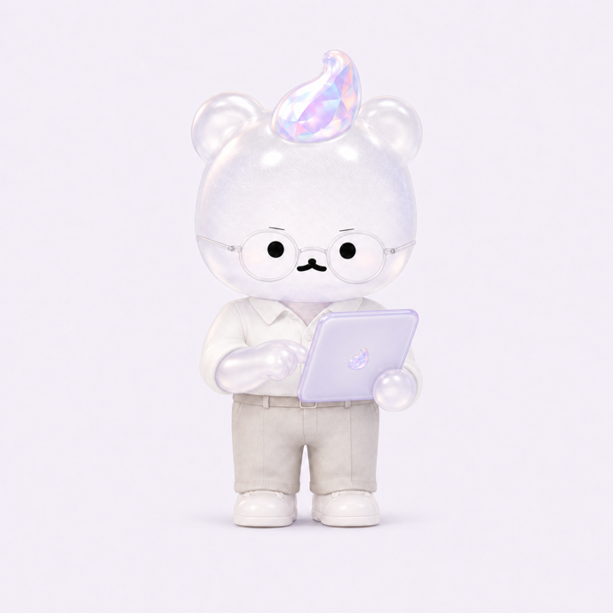

<!doctype html>
<html lang="ko">
<head>
<meta charset="utf-8">
<meta name="viewport" content="width=device-width,initial-scale=1,viewport-fit=cover">
<title>추구미즘</title>
<script>
// 앱 로그인 반송 — Supabase가 로그인 토큰을 앱 스킴 대신 이 페이지로 내려보낸다
// (redirect_to 허용 목록 판정이 불안정해 Site URL 폴백이 사실상 유일한 귀환 경로다).
// 웹에서 시작한 로그인은 같은 탭이라 czm_oauth_web 표식이 남아 있고,
// 앱의 로그인 창(ASWebAuthenticationSession)은 새 컨텍스트라 표식이 없다 —
// 표식 없이 토큰이 왔으면 앱에서 온 것이므로 앱 스킴으로 되던져 창을 닫게 한다.
(function(){
  var h = location.hash;
  if (h.indexOf("access_token") < 0 && h.indexOf("error_description") < 0) return;
  if (!/iPhone|iPad/.test(navigator.userAgent)) return;            // 앱은 iOS뿐
  try {
    if (sessionStorage.getItem("czm_oauth_web")) { sessionStorage.removeItem("czm_oauth_web"); return; }
  } catch(e) { return; }
  location.replace("chugumism://auth" + h);
})();
</script>
<!--
  앱 기틀 v1 Phase 1 — 홈 + 퀘스트 루프
  설계: docs/superpowers/specs/2026-08-16-app-foundation-v1-design.md §3-2 §4
  사전: modules/quest-dict.json (이론설계_퀘스트사전 v1.2 전사본)

  화면이 지켜야 하는 계약 (설계서 §1)
    · 3종 합산 금지 — 스탯 3개를 더한 수를 절대 그리지 않는다
    · 레벨·등급·진행률 %·평균·백분위·랭킹 금지 — 비교 대상은 지난 나뿐
    · 숫자는 줄지 않는다 · 구미는 실망하지 않는다 · 쌓인 것만 표시한다
    · 0은 숫자로 쓰되 조용히 — 아이템·스킬이 다 "첫 칸"으로 뜨니 셋 중 둘이 같은 말이 되어
      현황이 안 읽혔다(대표 2026-08-24). "0을 감춘다" → "0을 부끄럽지 않게 보인다"로 개정.

  ※ 유저향 문구는 전부 [마케팅 검수 통과 2026-08-21] 초안. 커밋 전 brand/문체가이드 3단 통과 필요.
-->
<!-- Pretendard 실로드 + 공통 토큰 정본(czm-ui.css, P0-1 2026-08-23).
     토큰(:root)·접힘(details.fold)·ph-glass는 czm-ui.css가 정본 — 여기 중복 정의를 지웠다. -->
<link rel="preconnect" href="https://cdn.jsdelivr.net" crossorigin>
<link rel="stylesheet" href="https://cdn.jsdelivr.net/gh/orioncactus/pretendard@v1.3.9/dist/web/variable/pretendardvariable-dynamic-subset.min.css">
<link rel="stylesheet" href="czm-ui.css">
<style>
*{box-sizing:border-box}
/* 밖 여백 0 · 화면 하나 = 100dvh. 문서처럼 세로로 잇지 않는다 (대표 2026-08-24 "앱은 숏폼").
   셸(.screen / .screen-top / .screen-body / .screen-btm)은 czm-ui.css 정본을 쓴다.
   대기 화면 그라디언트는 body에 고정 — 화면이 바뀌어도 공기는 같다. */
body{margin:0;color:var(--ink);
  font:16px/1.6 'Pretendard Variable','Pretendard',-apple-system,BlinkMacSystemFont,'Apple SD Gothic Neo',sans-serif;
  -webkit-font-smoothing:antialiased;word-break:keep-all;
  background:radial-gradient(circle at 12% 6%,rgba(242,169,196,.38) 0%,rgba(242,169,196,0) 42%),
             radial-gradient(circle at 92% 22%,rgba(156,200,232,.32) 0%,rgba(156,200,232,0) 46%),
             radial-gradient(circle at 50% 105%,rgba(185,175,209,.30) 0%,rgba(185,175,209,0) 55%),var(--bg);
  background-attachment:fixed}
html,body{overscroll-behavior-y:none}
h1{font-size:21px;margin:0;letter-spacing:-.02em}
.hd{display:flex;align-items:baseline;justify-content:space-between;gap:12px}
.hd small{color:var(--sub);font-size:12px;flex:none}
.hd-r{display:flex;align-items:center;gap:10px;flex:none}
/* 톱니는 44px 안에 든다 — 애플 최소 터치 크기. 아이콘만 21px이라 보기엔 작고 누르기엔 넉넉하다. */
.hd-gear{width:44px;height:44px;margin:-11px -10px -11px 0;padding:0;border:0;background:none;
  color:var(--sub);display:flex;align-items:center;justify-content:center;cursor:pointer;
  border-radius:22px;transition:color .15s,background .15s}
.hd-gear:active{color:var(--accent);background:rgba(0,0,0,.05)}
/* 하단 보조 조작 — 주 CTA 아래 한 줄. 버튼 셋을 세로로 쌓지 않는다 */
.btm-quiet{display:flex;align-items:center;justify-content:center;gap:4px;margin-top:2px}
.btm-quiet .btn.quiet{margin:0;padding:8px 10px}
.btm-quiet i{color:var(--line);font-style:normal}
/* .card·.btn 3종은 czm-ui.css 정본을 쓴다 — 여기 복제본이 남아 있어서 v2 토큰(프리즘
   그라데이션 CTA·로고 잉크)이 이 화면에만 안 왔다(대표 지적 2026-08-24). 지운 자리다. */
/* 본문 블록 사이 간격 — czm-ui v2는 이 간격을 페이지에 맡긴다(값은 --gap-block 토큰).
   목록으로 늘어선 .q끼리는 예외다: 자기 margin-bottom(8px)이 이미 잇고 있다. */
.screen-body > * + *{margin-top:var(--gap-block)}
.screen-body > .q{margin-bottom:0}
.screen-body > .q + .q{margin-top:var(--sp-2)}
.card h2{font-size:13px;color:var(--accent);margin:0 0 10px;font-weight:700;letter-spacing:.02em}
.lead{font-size:18px;line-height:1.5;margin:0 0 4px;letter-spacing:-.01em;font-weight:600}
.note{font-size:13.5px;color:var(--sub);margin:6px 0 0;line-height:1.6}
button{font:inherit;cursor:pointer}
.q{display:block;width:100%;text-align:left;background:var(--card);border:1.5px solid var(--line);
   border-radius:12px;padding:var(--sp-4);margin-bottom:var(--sp-2);color:var(--ink)}
.q:active{background:var(--soft);border-color:var(--accent)}
/* 제목은 두 줄까지. 지식 미션은 퀴즈 질문이 그대로 제목이라 세 줄을 넘기는 칸이 있고
   ("색 신호 중 지금까지 검증으로 확인된 유일한 주축은?"), 그 한 칸이 길어지면 목록의
   리듬이 그 자리에서 끊긴다. 짧은 제목을 따로 두는 게 정답이지만 그건 사전을 고치는 일이라
   이론팀 몫이다 — 화면에서 할 수 있는 것은 줄 수를 맞추는 데까지다. */
.q .t{font-size:15.5px;line-height:1.45;font-weight:600;
  display:-webkit-box;-webkit-line-clamp:2;-webkit-box-orient:vertical;overflow:hidden}
.q .m{font-size:12.5px;color:var(--sub);margin-top:5px;display:flex;gap:7px;flex-wrap:wrap;align-items:center;font-weight:400}
.tag{border:1px solid var(--line);border-radius:99px;padding:1px 8px;font-size:11px;color:var(--sub)}
.tag.free{border-color:#CFE0D4;color:var(--ok)}
/* 미션 종류 배지 — 테두리 태그들과 달리 채워서 낸다. 한 줄에 태그가 서넛 서므로
   전부 같은 얼굴이면 다시 다 읽어야 한다. 종류만 색 면으로 앞에 세워 먼저 눈에 걸리게 한다. */
.kind{display:inline-flex;align-items:center;gap:3.5px;border-radius:99px;
  padding:2px 8px 2px 6px;font-size:11px;font-weight:700;letter-spacing:-.01em}
.kind svg{flex:none;opacity:.9}
.kind-item{background:#F6EAF2;color:#8E4585}
.kind-skill{background:#EAF0F8;color:#3E5C88}
.kind-knowledge{background:#F1EDF8;color:#5B4A8A}

/* 보상 팝업 (2026-08-26) — 미션을 마쳤을 때 무엇이 얼마나 올랐는지.
   그전에는 조용히 다음 화면으로 넘어가서 **해냈다는 사실이 눈에 남지 않았다.**
   모바일 게임이 획득을 늘 팝업으로 세우는 이유가 그것이다. 다만 화려하게 만들지 않는다 —
   우리 앱에서 오르는 것은 점수가 아니라 그 사람의 매력이고, 그 자리는 요란할수록 가벼워진다. */
.rw-back{position:fixed;inset:0;z-index:70;display:flex;align-items:center;justify-content:center;
  padding:24px;background:rgba(28,22,34,.42);backdrop-filter:blur(3px);-webkit-backdrop-filter:blur(3px);
  animation:rwFade .22s ease both}
.rw{width:100%;max-width:332px;background:#fff;border-radius:22px;padding:26px 22px 20px;
  text-align:center;box-shadow:0 22px 60px rgba(28,22,34,.24);animation:rwRise .3s cubic-bezier(.2,.9,.3,1) both}
/* character/ 원본은 배경이 채워진 정사각 PNG다 — 그냥 얹으면 흰 네모가 뜬다.
   intro.html과 같은 규약으로 라운드 프레임을 씌워 카드로 읽히게 한다(에셋 매핑 규약). */
.rw .rw-gumi{width:92px;height:92px;margin:0 auto 14px;display:block;object-fit:cover;
  border-radius:26px;box-shadow:0 6px 20px rgba(74,43,92,.12)}
.rw h3{margin:0 0 6px;font-size:19px;font-weight:800;letter-spacing:-.02em;color:var(--ink)}
.rw p{margin:0;font-size:13.5px;color:var(--sub);line-height:1.7}
.rw .grew{margin:16px 0 4px}
.rw .btn{margin-top:18px}
@keyframes rwFade{from{opacity:0}to{opacity:1}}
@keyframes rwRise{from{opacity:0;transform:translateY(14px) scale(.97)}to{opacity:1;transform:none}}
@media (prefers-reduced-motion:reduce){
  .rw-back,.rw{animation:none}
}
.stats{display:grid;grid-template-columns:repeat(3,1fr);gap:9px}
.st{background:var(--soft);border-radius:13px;padding:13px 11px;text-align:center}
.st b{display:block;font-size:24px;font-weight:700;letter-spacing:-.02em}
.st span{font-size:11.5px;color:var(--sub)}
/* 0도 숫자로 적는다. 대신 잉크를 낮춰 조용하게 — 감추면 현황이 안 읽힌다(대표 2026-08-24) */
.st.zero b{color:var(--sub)}
.stats.mini{gap:7px}
.stats.mini .st{padding:9px 6px;border-radius:11px}
.stats.mini .st b{font-size:19px}
.field{width:100%;padding:13px;border:2px solid var(--line);border-radius:12px;font:inherit;margin-top:10px;background:#fff}
.field:focus{outline:none;border-color:var(--accent)}
/* ── 로그인 (대표 2026-08-25) ───────────────────────────────────
   카드를 걷어냈다 — 배경 위에 뜬 흰 상자가 "웹으로 대충" 느낌의 절반이었다.
   입력칸이 곧 화면이라 설명 문단 없이도 무엇을 하는 자리인지 보인다. */
.auth{display:flex;flex-direction:column;}
.auth .btn{margin-top:var(--sp-3);}
.auth .rule{font-size:12px;color:var(--sub);margin:6px 2px 0;}
.auth .rule.mid{text-align:center;margin-top:var(--sp-4);}
.auth .note{margin-top:var(--sp-2);}
.auth .note:empty{margin:0;}
.or{display:flex;align-items:center;gap:var(--sp-3);color:var(--sub);font-size:12px;margin-top:var(--sp-5);}
.or::before,.or::after{content:"";flex:1;height:1px;background:var(--line);}
/* 접힘 상자(details.fold)는 czm-ui.css 정본을 쓴다 */
.demo{display:grid;grid-template-columns:auto 1fr;gap:6px 14px;background:var(--soft);
  border-radius:12px;padding:14px 15px;margin-top:4px;align-items:baseline}
.demo-l{font-size:12px;color:var(--sub)} .demo-v{font-size:15px;font-weight:600}
.hidden{display:none}
.chk{font:13px/1.7 ui-monospace,SFMono-Regular,Menlo,monospace;white-space:pre-wrap}
.chk .p{color:var(--ok)} .chk .f{color:var(--danger);font-weight:700}
.banner{background:#FFF6E8;border:1px solid #F0DEC0;border-radius:12px;padding:11px 13px;font-size:13px;color:#7A5C2E}

/* ── 프리즘 홈 (고객팀 리디자인 1차, 시안=스펙 2026-08-21) ─────────────
   여백 토큰(시트①): 화면 좌우24 · 섹션22 · 카드 안쪽 22~30 · CTA 위 14
   .ph-bg는 폐지 — 그라디언트를 body로 올렸다(2026-08-24 셸 전환). */
.ph-head{display:flex;flex-direction:column;gap:6px;padding:0;}
.ph-h1{font-size:24px;font-weight:800;letter-spacing:-.015em;margin-left:-1px;color:var(--ink);}
.ph-sub{font-size:13.5px;color:var(--sub);}
/* .ph-glass는 czm-ui.css 정본을 쓴다 (2026-08-23 이관) */
.ph-prism{display:flex;flex-direction:column;gap:var(--sp-3);padding:var(--card-pad);}
.ph-prism .row{display:flex;justify-content:space-between;align-items:baseline;}
.ph-prism .t{font-size:13.5px;font-weight:700;color:var(--deep);}
.ph-prism .d{font-size:12px;color:var(--sub);}
.ph-bar{position:relative;height:14px;border-radius:7px;}
.ph-ends{display:flex;justify-content:space-between;font-size:12px;font-weight:600;}
/* 쌓은 것 한 줄 — 프리즘 바 아래. 진행점을 대신하는 자리라 실제 숫자만 온다 */
.ph-grown{font-size:12.5px;color:var(--sub);margin:-2px 0 0;}
.ph-grown b{color:var(--accent);font-weight:800;}
/* 목표 타입 레벨 (이론 확정 2026-08-25). 8칸 숫자 위가 아니라 **프리즘 바 아래**에 둔다 —
   같은 카드 안이되 다른 눈금이라는 것이 자리로 읽혀야 한다. */
.ph-lv{margin:10px 0 2px;}
.ph-lv-top{display:flex;align-items:baseline;justify-content:space-between;gap:8px;}
.ph-lv-n{font-size:13.5px;color:var(--ink);font-weight:600;}
.ph-lv-n b{font-size:15px;font-weight:800;color:var(--deep);letter-spacing:-.01em;}
.ph-lv-p{font-size:12.5px;font-weight:700;color:var(--sub);font-variant-numeric:tabular-nums;}
.ph-lv-bar{height:5px;border-radius:3px;background:rgba(120,100,140,.14);margin:6px 0 5px;overflow:hidden;}
.ph-lv-bar i{display:block;height:100%;border-radius:3px;transition:width .4s ease;}
.ph-lv-d{font-size:11.5px;color:var(--sub);opacity:.9;}
/* 해낸 직후 "무엇이 얼마나" — 이 화면의 주인공이라 숫자를 크게 세운다 */
.grew{display:flex;align-items:baseline;justify-content:center;gap:9px;margin:16px 0 4px;}
.grew span{font-size:14px;font-weight:700;color:var(--deep);}
.grew b{font-size:30px;font-weight:800;color:var(--accent);line-height:1;}
.grew i{font-style:normal;font-size:17px;color:var(--sub);}
/* 미션 카드의 "해내면 얼마나" — 제목 아래 한 줄, 약속이라 조용하게 */
.gain-hint{display:inline-block;font-size:12.5px;font-weight:700;color:var(--accent);
  background:rgba(255,255,255,.62);border-radius:999px;padding:4px 11px;align-self:flex-start;}
/* 카드 사이 간격은 .screen-body의 gap(--gap-block)이 준다 — margin-top으로 또 벌리지 않는다 */
/* flex:none이 없으면 부모(.screen-body, flex column)가 이 카드를 눌러 줄이는데
   overflow:hidden이라 넘친 부분이 소리 없이 잘린다. 빈 옷장 히어로에서 13px가 그렇게
   사라지고 있었다(실기기 안전영역 넣고 실측, 2026-08-25). 히어로는 내용만큼 서야 한다. */
.ph-hero{position:relative;overflow:hidden;display:flex;flex-direction:column;gap:var(--sp-4);border-radius:20px;padding:26px var(--gutter);box-shadow:0 12px 32px rgba(74,43,92,.10);min-height:196px;flex:none;}
/* 진단 전 화면은 이 카드가 화면의 전부다 — 제목·설명·구미가 한 덩어리로 서야
   흰 박스 밖에 빈 여백이 안 생긴다(대표 2026-08-24). 구미는 아래로 내려 글과 겹치지 않게. */
/* 카드 하나가 화면의 주인공이다 — 높이를 콘텐츠에 맡기고 셸이 중앙에 놓는다.
   억지로 늘리면 카드 안이 비고, 고정하면 카드 밖이 빈다. */
.ph-hero.intro-hero{padding:30px var(--gutter) 32px;min-height:0;gap:var(--sp-3);}
.intro-hero .ph-title{font-size:27px;padding-right:0;}
.intro-hero .ph-whytxt{padding-right:0;}
/* 구미 원본은 흰 사각 배경이라 그냥 얹으면 카드 위에 네모가 뜬다 — 원형으로 오려낸다 */
.intro-hero .ph-gumi{position:relative;top:auto;right:auto;margin:0 auto;width:156px;height:156px;
  border-radius:50%;overflow:hidden;}
.intro-hero .ph-gumi img{position:absolute;inset:0;width:156px;height:156px;transform:scale(1.18);filter:none;}
.intro-hero .ph-gumi .pad{display:none;}
.ph-gumi{position:absolute;right:10px;top:64px;width:136px;height:136px;pointer-events:none;}
.ph-gumi .pad{position:absolute;left:50%;top:50%;width:132px;height:132px;transform:translate(-50%,-50%);border-radius:999px;background:radial-gradient(circle,rgba(255,255,255,.95) 0%,rgba(255,255,255,.7) 55%,rgba(255,255,255,0) 78%);}
.ph-gumi img{position:absolute;inset:0;width:136px;height:136px;object-fit:contain;transform:rotate(-6deg);filter:drop-shadow(0 8px 14px rgba(183,107,163,.3));}
.ph-title{font-size:24px;font-weight:800;line-height:1.35;letter-spacing:-.015em;margin-left:-1px;color:var(--ink);padding-right:120px;word-break:keep-all;}
.ph-whytxt{font-size:14px;color:var(--sub);line-height:1.6;padding-right:120px;}
/* 주 CTA의 자체 그라데이션은 지웠다 — czm-ui.css의 --cta(프리즘 딥 3색)가 정본이다. */
/* ── 오늘의 착용 · 옷장 ────────────────────────────────────────────
   무드 칩 한 줄(가로 스크롤) — 아침 화면의 유일한 선택 조작(설계도 T-H) */
.chips{display:flex;gap:var(--sp-2);overflow-x:auto;-webkit-overflow-scrolling:touch;
  padding:var(--sp-1) 0 var(--sp-2);scrollbar-width:none;}
.chips::-webkit-scrollbar{display:none;}
.chip{flex:none;border:1.5px solid var(--line);background:var(--card);border-radius:99px;
  padding:9px var(--sp-4);min-height:40px;font-size:13.5px;font-weight:600;color:var(--sub);}
.chip.on{border-color:var(--accent);background:var(--soft);color:var(--deep);}
/* 색 고르기 — 팔레트 정본(pc-palette.json)의 베스트 색을 타입 순서대로 편다.
   8타입 × 14색 = 112칸이라 그대로 펴면 화면이 700px 넘게 흘러 담기 버튼이 화면 밖으로 나갔다
   (실측 2026-08-24). 색 고르기는 훑어보는 위젯이라 **그 상자 안에서만** 스크롤한다 —
   화면이 스크롤하는 것과 다르다. 상자 밖(이름·부위·담기)은 늘 제자리에 보인다. */
.sw{display:grid;grid-template-columns:repeat(auto-fill,minmax(38px,1fr));gap:var(--sp-2);margin-top:var(--sp-2);
  max-height:186px;overflow-y:auto;overscroll-behavior:contain;padding:2px;}
.swatch{aspect-ratio:1;min-height:38px;padding:0;border-radius:9px;border:1px solid rgba(0,0,0,.10);}
.swatch.on{outline:3px solid var(--accent);outline-offset:1px;}
/* margin-top:auto가 셸의 중앙 정렬을 이겨서 히어로 아래 330px 구멍을 만들고 있었다
   (대표 지적 2026-08-24). 간격은 .screen-body의 gap이 준다. */
/* ── 홈 = 허브 (대표 2026-08-24) ────────────────────────────────
   "난 지금 어떤 상태이고 / 뭘 해야 하고 / 뭘 시도할 수 있는지"를 한 화면에.
   세 덩어리로만 세운다 — 상태 카드 · 오늘의 미션 카드 · 기능 그리드.
   기능 단위로 묶는다: 설명과 그 설명의 실행 버튼은 **같은 카드 안에** 있다.
   그래서 홈에는 하단 고정 CTA가 없다. 카드가 자기 버튼을 갖는다. */
.ph-prism .stats{border-top:1px solid var(--line);padding-top:var(--sp-3);}
/* 미션 카드가 버튼까지 품는다 — 구미를 제목 옆으로 줄여 버튼 자리를 비운다 */
.home-hero{gap:var(--sp-3);padding:var(--card-pad);min-height:0;}
.home-hero .ph-gumi{top:12px;right:10px;width:84px;height:84px;}
.home-hero .ph-gumi img{width:84px;height:84px;}
.home-hero .ph-gumi .pad{width:84px;height:84px;}
.home-hero .ph-title{font-size:20px;padding-right:88px;}
/* 부제도 구미를 피한다 (2026-08-26). padding-right:0이던 탓에 "하나만 골라주세요"가
   구미 뒤로 들어가 글자가 안 읽혔다 — 제목만 피하게 해 두면 두 줄짜리 부제가 그대로 겹친다.
   구미는 top:12px에 84px이라 제목 한 줄 + 부제 한 줄 높이를 함께 덮는다. */
.home-hero .ph-whytxt{padding-right:88px;}
.home-hero .btn{margin-top:0;}
.home-hero .btm-quiet{margin-top:0;}
/* 홈에 편 미션 목록 — 히어로의 그라데이션 위에 얹히므로 카드를 반투명으로 눕힌다.
   간격은 ph-hero의 flex gap이 준다(margin을 더하면 이중이 된다). */
/* flex:none이 없으면 부모(.screen-body, flex column)가 이 카드를 눌러 줄이는데
   .ph-hero가 overflow:hidden이라 목록 아래 두 칸이 소리 없이 잘린다. */
.home-picks{gap:var(--sp-2);flex:none;}
.home-picks .q{background:rgba(255,255,255,.74);border-color:rgba(255,255,255,.85);}
.home-picks .q:active{background:rgba(255,255,255,.94);border-color:var(--accent);}
/* 퀘스트 로그 탭 — 진행 가능 · 진행 중 · 완료 (대표 설계 2026-08-26).
   세그먼트로 둔 이유: 세 목록을 세로로 쌓으면 한 화면에 다 안 들어오고,
   스크롤 밑으로 내려간 「완료」는 아무도 안 연다. 앱은 숏폼이다. */
.qseg{display:flex;gap:4px;background:rgba(255,255,255,.5);border-radius:12px;
  padding:3px;margin-bottom:12px;flex:none;}
.qseg button{flex:1;border:0;background:transparent;border-radius:9px;padding:8px 4px;
  font:inherit;font-size:13px;font-weight:600;color:var(--sub);cursor:pointer;
  min-height:38px;transition:background .12s,color .12s;}
.qseg button.on{background:#fff;color:var(--deep);box-shadow:0 1px 4px rgba(74,43,92,.1);}
.qseg button b{font-weight:700;font-size:12px;opacity:.75;}
.home-hero .ph-whytxt+.q{margin-top:2px;}
/* 기능 그리드 — 앱에서는 탭바가 기록·내 결과·도구를 이미 갖고 있어 그 셋이 빠지고 한 줄이 된다 */
.ph-grid{display:grid;grid-template-columns:repeat(3,1fr);gap:var(--sp-3);}
.ph-entry{flex:1;display:flex;align-items:center;justify-content:center;gap:var(--sp-2);min-height:48px;border:1px solid rgba(255,255,255,.7);border-radius:var(--radius-btn);background:rgba(255,255,255,.44);backdrop-filter:blur(15px);-webkit-backdrop-filter:blur(15px);color:var(--ink);font-size:13.5px;font-weight:600;text-decoration:none;cursor:pointer;}
</style>
</head>
<body>
<div class="screen" id="app"></div>

<!-- 계약층. 모듈보다 먼저 온다 — 저장 키·좌표·측정값 모양을 여기서 꺼내 쓴다 -->
<script src="czm-core.js"></script>
<!-- 스탯·착용 산식 정본(theory/산식_RPG스탯성장_v1 구현체). 여기서 산식을 다시 만들지 않는다 -->
<script src="czm-stats.js"></script>
<script type="module">
// 모듈 캐시 무력화. "?v=dev"는 배포 시 커밋 해시로 치환된다(deploy_survey.sh).
// 로컬에서는 매번 다른 값이어야 한다 — 고정값이면 개발 중 고친 코드가 캐시에 가려진다(두 번 겪었다).
// 정적 import는 변수를 못 받으므로 동적 import를 쓴다. 문자열 "?v=dev"는 sed가 찾을 수 있게 그대로 둔다.
const MODV = /^(localhost|127\.|$)/.test(location.hostname) ? `?t=${Date.now()}` : "?v=dev";

// 모듈 격리 (모듈구조 v1 규칙 4) — 하나가 죽어도 페이지는 뜬다.
// 오늘 quest-engine의 export 하나가 빠졌을 때 화면이 통째로 백지가 됐다.
// 걸음이 깨져도 기록·영상·의견은 보여야 한다. 실패는 그 자리에만 남긴다.
const DOWN = [];
async function mod(path, label){
  try { return await import(`${path}${MODV}`); }
  catch(e){ console.error("모듈 로드 실패 —", path, e); DOWN.push(label); return null; }
}
const QE = await mod("./quest-engine.js", "미션");   // 유저향 표기 — 내부 용어 '걸음'은 화면에 내지 않는다 [게이트 통과]
const SS = await mod("./session.js", "계정");
// 탭 하나에 화면 하나. 이 둘은 파일을 나눴다 — home.html이 이미 1300줄이라
// 여기에 더 얹으면 한 파일을 여러 사람이 동시에 못 고친다(모듈구조 v1 규칙 4).
const SHEET = await mod("./stat-sheet.js", "캐릭터 시트");
const HIST  = await mod("./history.js", "이력");
// 옷의 소재·실루엣 표(이론 HAVE-2). 못 뜨면 색 판정만으로 종전처럼 돈다 — 옷장이 안 죽는다.
const TAGS  = await mod("./cloth-tags.js", "옷 태그");
const { issueOffer, judgeSkill, selfCheck, withKnowledge } = QE ?? {};
const { ensureUser, linkUid, sbFetch, sbRpc, fetchStats, removeStat, PUBLIC,
        isSignedIn, oauthStart, captureRedirect, signOut,
        signUpPassword, signInPassword, sendRecover, setPassword } = SS ?? {};
const downBanner = () => DOWN.length
  ? `<div class="banner">${DOWN.join("·")} 기능이 잠깐 안 되고 있어요. 나머지는 그대로 쓰실 수 있어요.</div>` : ``;

const $ = id => document.getElementById(id);
const app = $("app");
const K = CZM.KEYS, LS = CZM.store;   // 저장 키·읽기쓰기는 계약층이 소유한다

let UID = LS.raw(K.uid);   // index.html은 생문자열로 저장한다
if (!UID) { UID = crypto.randomUUID(); try{ localStorage.setItem(K.uid, UID); }catch(e){} }

// 퀴즈는 이론팀 파일이 원천이다. 사전에 복사하지 않고 실행 시 합친다 —
// 문항이 늘면 코드를 안 고쳐도 학습 칸이 는다. (배포 시 경로는 deploy_survey.sh가 고친다)
const [DICT0, QUIZ] = await Promise.all([
  fetch("quest-dict.json", {cache:"no-store"}).then(r => r.json()),
  fetch("quest-quiz.json", {cache:"no-store"}).then(r => r.ok ? r.json() : null).catch(() => null),
]);
const DICT = (QUIZ && withKnowledge) ? withKnowledge(DICT0, QUIZ) : DICT0;

// ── 서버 기록 ────────────────────────────────────────────────
// 로컬 계측 오염 방지 (index.html:271과 같은 규율, 2026-08-05).
// 이게 없어서 개발 중 테스트가 운영 DB에 그대로 쌓였다 — 매번 손으로 지워야 했다.
// 서버 왕복을 실제로 확인해야 할 때만 ?live=1 로 연다.
const LOCAL = /^(localhost|127\.|$)/.test(location.hostname)
              && !new URLSearchParams(location.search).has("live");
// 개발·검수 전용 노출 게이트 — "엔진 자체 점검"은 ?dev=1일 때만 (P0-5, photo.html과 같은 규칙)
const DEV = new URLSearchParams(location.search).get("dev")==="1";
// extra는 fetch 옵션 통로 — 페이지를 떠나는 전송은 {keepalive:true} 필수(데이터 운영규약).
const sbPost = (table, row, extra={}) => LOCAL ? Promise.resolve(true)
  : sbFetch(table, {method:"POST", headers:{Prefer:"return=minimal"}, body:JSON.stringify(row), ...extra});
const track = (event, props={}, extra={}) => sbPost("events", {user_id:UID, event, props, app_version:"home_v1"}, extra);

// ── 상태 ─────────────────────────────────────────────────────
// 서버가 원천이다. 로컬은 조회가 실패했을 때만 쓰는 사본 — 두 벌을 동시에 진실로 삼지 않는다.
let STATS = LS.get(K.stats, []);          // [{id, kind, ref, slot, attrs, at}]
/* 지금 열어 놓은 미션 id. 화면을 떠났다 돌아오는 흐름(재촬영 → photo.html → 복귀)이
   있어서 기기에 남긴다 — 모듈 변수로 두면 그 왕복에서 어느 미션이었는지를 잃는다. */
let CUR = LS.get("czm_quest_cur", null);
let ASK_FROM = "record";   // 친구 설문에 어느 문으로 들어왔나
const setCur = v => { CUR = v; LS.set("czm_quest_cur", v); };

const st = {
  /* 안고 있는 미션들. 2026-08-26까지는 한 건짜리 객체였다(대표 지시로 여럿이 됐다) —
     그때 쌓인 한 건을 잃지 않도록 읽을 때 배열로 감싼다. */
  get actives(){
    const v = LS.get(K.activeQuest, null);
    return Array.isArray(v) ? v : v ? [v] : [];
  },
  set actives(v){ LS.set(K.activeQuest, v); },
  /* 지금 다루는 한 건. 이 두 줄 덕에 등록·퀴즈·재촬영 화면은 예전 그대로 돌아간다.
     null 대입은 "이 미션을 목록에서 뺀다"는 뜻이다 — 완료도 포기도 여기로 온다. */
  get active(){ return st.actives.find(a => a.id === CUR) ?? null; },
  set active(v){
    const rest = st.actives.filter(a => a.id !== CUR);
    st.actives = v ? [...rest, v] : rest;
    setCur(v ? v.id : null);
  },
  add(e){ STATS = [...STATS, e]; LS.set(K.stats, STATS); },
  drop(id){ STATS = STATS.filter(s => s.id !== id); LS.set(K.stats, STATS); },
  get skipped(){ return LS.get(K.skipped, []); },
  set skipped(v){ LS.set(K.skipped, v); },
  // 홈에 편 목록의 발행 id. 일부러 저장하지 않는다 — 페이지 수명 동안만 유지해
  // 같은 목록을 다시 그릴 때 offer 행이 겹쳐 쌓이는 것만 막는다(§4-5 거부율 분모 보호).
  homeOffer: null,
};
/* 수락 → 완료가 며칠 걸렸나. 미션을 여럿 안고 갈 수 있게 되면서(대표 2026-08-26)
   "고른 것 중 무엇이 실제로 끝나는가"가 이 앱의 핵심 지표가 됐다.
   quest_selected와 quest_completed의 시각 차로도 구할 수 있지만, 그러려면 두 이벤트를
   조인해야 하고 재설치·리셋을 건너면 짝이 깨진다. 완료 쪽에 직접 싣는다. */
const heldDays = a => a?.started
  ? Math.max(0, Math.round((Date.now() - new Date(a.started)) / 864e5)) : null;

const diag  = LS.get(K.diag, null);
// 타입 색 — 프리즘 진행 바 전용. 정본은 index.html TYPES(이론 소유 아님, 표시 토큰).
// 값이 바뀌면 index와 같이 바꾼다.
const TCOLOR={romantic:"#F2A9C4",pure:"#9CC8E8",elegant:"#B9AFD1",energetic:"#F5B84F",
              gorgeous:"#C0546B",classic:"#C2A377",charisma:"#4A2B5C",chic:"#5C7FA3"};
const photo = LS.get(K.photo, null);
const cell  = id => DICT.cells.find(c => c.id === id);
const count = kind => STATS.filter(s => s.kind === kind).length;

/* ── 미션 가산 (theory/초안_미션가산매핑_v1_2026-08-24.md) ──────────────
   규칙은 czm-stats.js가 갖고 있다 — 여기서 판정을 다시 짜지 않는다.
   대상 타입은 발행 시점에 확정해 active quest에 심는다(§1-2). 완료 때 재판정하지 않는다. */
const USER  = () => ({want_type: diag?.want ?? null, have_type: diag?.have ?? null});
/* 타입 키 → 한글 이름. 사전에 없으면 czm-core의 정본을 한 번 더 본다.
   마지막 폴백은 빈 문자열이다 — 예전에는 못 찾은 키를 그대로 화면에 내보내서,
   값이 어긋나면 "2 +1" 같은 숫자가 타입 이름 자리에 그대로 떴다(2026-08-26 확인).
   유저에게 내부 값을 보이느니 그 자리를 비우는 편이 낫다. 배지 자체가 사라진다. */
const tName = k => DICT?.type_names?.[k] ?? CZM.TYPE_NAMES?.[k] ?? "";

/* 타입별 구미 (헌법 §9 확장 로드맵 — 8타입 구미). 보상 팝업이 **추구미 쪽 구미**를 세운다:
   미션 하나를 마칠 때마다 지금 어디로 가고 있는지가 그림으로 보인다.
   파일 이름이 이론 키와 안 맞는 자리가 둘 있다 — 우아한=소프트, 화려함=화려한.
   못 찾으면 기본형으로 떨어지고, 그것도 없으면 img가 스스로 숨는다. */
const GUMI_FILE = {
  romantic:"로맨틱", pure:"청순청량", elegant:"소프트", energetic:"에너제틱",
  gorgeous:"화려한", classic:"클래식", charisma:"카리스마", chic:"세련",
};
const gumiOf = k => `../character/${encodeURIComponent(GUMI_FILE[k] ?? "기본형")}.png`;
// 표시 스탯 = 출발선 + 쌓은 것. 출발선은 진단이 정해 chugu_diag에 남긴다(index.html).
// 그 값이 없는 옛 진단에서는 숫자 대신 오른 양만 말한다 — 없는 기준선을 지어내지 않는다.
const statNow = () => diag?.base_stats
  ? CZMStats.finalStats(diag.base_stats, CZMStats.gainsOf(STATS), null) : null;

/* §6-1 grant — 지급할 것이 있으면 stat_entries 행에 얹을 칸을 돌려준다.
   이미 준 등급 이하면 아무것도 주지 않는다: 중복도 강등도 여기서 막힌다. */
function gainFor(c, event, stamped){
  const ev = CZMStats.evidenceOf(c, event);
  if (!ev) return null;
  const want  = CZMStats.RUNG[ev];
  const given = STATS.filter(s => s.ref === c.id).reduce((n, s) => n + (s.gain || 0), 0);
  if (want <= given) return null;
  return {gain: want - given, evidence: ev, gain_version: "v1",
          gain_type: stamped || CZMStats.targetType(USER(), c)};
}

// 해낸 직후 — 무엇이 얼마나 올랐는지 이 자리에서 말한다. st.add 뒤에 부른다.
function grewBlock(g){
  if (!g) return ``;
  const s = statNow(), nm = esc(tName(g.gain_type));
  return s
    ? `<div class="grew"><span>${nm}</span><b>${s[g.gain_type] - g.gain}</b><i>→</i><b>${s[g.gain_type]}</b></div>`
    : `<div class="grew"><span>${nm}</span><b>+${g.gain}</b></div>`;
}

// 로그인한 뒤에만 서버와 이야기한다. 순서가 곧 의존관계다 —
// 행이 있어야 계정에 묶을 수 있고, 묶여야 own_read가 내 행을 알아본다.
async function bootSession(){
  if (LOCAL || !SS || !isSignedIn()) return;
  if (!LS.get(K.userEnsured, false) && await ensureUser(UID)) LS.set(K.userEnsured, true);
  await linkUid(UID);
  const remote = await fetchStats();
  if (remote) { STATS = remote.map(r => ({id:r.id, kind:r.kind, ref:r.ref, slot:r.slot,
                                          attrs:r.attrs ?? {}, at:r.acquired_at,
                                          removed_at:r.removed_at ?? null,
                                          // 가산 3칸을 안 옮기면 동기화가 성장분을 지운다
                                          gain:r.gain ?? 0, gain_type:r.gain_type ?? null,
                                          evidence:r.evidence ?? null}));
                LS.set(K.stats, STATS); }
  // 진단을 마치면 지식 한 칸이 자동으로 열린다 — 전 화면이 0인 첫날을 만들지 않는다(설계서 §3-4)
  if (diag && !STATS.some(s => s.ref === "diagnosis")) {
    st.add({kind:"knowledge", ref:"diagnosis", slot:null, at:new Date().toISOString()});
    sbPost("stat_entries", {user_id:UID, kind:"knowledge", ref:"diagnosis",
                            source_kind:"auto_detect", attrs:{via:"first_diagnosis"}});
  }
}

// ── 화면 ─────────────────────────────────────────────────────
const esc = s => String(s).replace(/[<&]/g, c => ({"<":"&lt;","&":"&amp;"}[c]));

// 화면 셸 — 한 화면은 위(제목)·가운데(내용)·아래(주 CTA) 셋뿐이다.
// 문서처럼 세로로 잇지 않는다: 가운데만 스크롤하고 주 CTA는 늘 엄지에 닿는 자리에 있다.
// 한 화면에 기능을 여러 개 얹지 않는다 — 넘치면 화면을 쪼갠다(대표 2026-08-24).
const shell = ({top = "", body = "", btm = ""}) =>
  `<div class="screen-top">${top}</div><div class="screen-body">${body}</div><div class="screen-btm">${btm}</div>`;

/* 제목 줄. gear=true면 오른쪽 끝에 설정 문을 낸다 (대표 2026-08-26 — "설정은 우측상단").
   **탭 화면 넷에만 붙인다.** 하위 화면(담기·미션 고르기·완료)에 두면 뒤로 갈 자리와 겹치고,
   지금 하던 일을 두고 설정으로 새는 문이 된다. 클릭은 아래 한 곳에서 위임으로 받는다 —
   화면마다 핸들러를 달면 새 화면을 만들 때마다 빠뜨린다(그게 죽은 버튼이 생기는 경로다). */
const GEAR = `<button class="hd-gear" data-gear aria-label="설정">
  <svg viewBox="0 0 24 24" width="21" height="21" fill="none" stroke="currentColor"
       stroke-width="1.7" stroke-linecap="round" stroke-linejoin="round">
    <circle cx="12" cy="12" r="3.1"></circle>
    <path d="M19.4 15a1.6 1.6 0 0 0 .33 1.76l.06.06a2 2 0 1 1-2.83 2.83l-.06-.06a1.6 1.6 0 0 0-1.76-.33 1.6 1.6 0 0 0-1 1.46V21a2 2 0 1 1-4 0v-.11a1.6 1.6 0 0 0-1.05-1.46 1.6 1.6 0 0 0-1.76.33l-.06.06a2 2 0 1 1-2.83-2.83l.06-.06A1.6 1.6 0 0 0 4.6 15a1.6 1.6 0 0 0-1.46-1H3a2 2 0 1 1 0-4h.11a1.6 1.6 0 0 0 1.46-1.05 1.6 1.6 0 0 0-.33-1.76l-.06-.06a2 2 0 1 1 2.83-2.83l.06.06A1.6 1.6 0 0 0 9 4.6a1.6 1.6 0 0 0 1-1.46V3a2 2 0 1 1 4 0v.11a1.6 1.6 0 0 0 1 1.46 1.6 1.6 0 0 0 1.76-.33l.06-.06a2 2 0 1 1 2.83 2.83l-.06.06a1.6 1.6 0 0 0-.33 1.76V9a1.6 1.6 0 0 0 1.46 1H21a2 2 0 1 1 0 4h-.11a1.6 1.6 0 0 0-1.46 1z"></path>
  </svg></button>`;
function head(title, sub = "", gear = false){
  return `<div class="hd"><h1>${title}</h1>
    ${sub || gear ? `<div class="hd-r">${sub ? `<small>${sub}</small>` : ``}${gear ? GEAR : ``}</div>` : ``}
  </div>`;
}

// 쌓인 것 3칸. 합계는 어디에도 그리지 않는다 — 셋을 더한 수는 매력 총량으로 읽힌다.
// 0도 숫자로 적는다(위 계약 개정): 셋 중 둘이 "첫 칸"으로 뜨면 무엇이 몇 개인지가 안 읽혔다.
function statsRow(mini = false){
  const rows = [["item","아이템"],["skill","스킬"],["knowledge","지식"]].map(([k,label])=>{
    const n = count(k);
    return `<div class="st${n ? "" : " zero"}"><b>${n}</b><span>${label}</span></div>`;
  }).join("");
  return `<div class="stats${mini ? " mini" : ""}">${rows}</div>`;
}

// 고객팀 회신(전체회의 2026-08-15)에서 온 값이다 — 개발팀이 지어낸 문턱이 아니다
const RETURN_GAP_DAYS = 3;

// ── 처음 온 사람 ─────────────────────────────────────────────
// 설계서 §3-3. 카드 문구는 설계서에서 그대로 가져온다.
const PREVIEW = [
  { h:"몇 분이면 여기까지 나와요",
    body:`<div class="demo"><div class="demo-l">추구미</div><div class="demo-v">로맨틱</div>
          <div class="demo-l">지금</div><div class="demo-v">클래식</div>
          <div class="demo-l">벌어진 쪽</div><div class="demo-v">웜·곡선</div></div>
          <p class="note">※ 예시 화면이에요.</p>` },
  { h:"다 바꾸라고 안 해요",
    body:`<div class="q" style="margin:0"><div class="t">아이라인 꼬리를 일자로 눕혀 이어 그려보세요</div>
          <div class="m"><span class="tag free">돈 안 들어요</span></div></div>
          <p class="note">한 번에 하나씩만 드려요.</p>` },
  { h:"해본 건 사라지지 않아요",
    body:`<div class="stats"><div class="st"><b id="cnt">0</b><span>쌓인 것</span></div></div>` },
];

function renderPreview(i = 0){
  const c = PREVIEW[i], last = i === PREVIEW.length - 1;
  track("preview_shown", {step:i});
  app.innerHTML = shell({
    top: head("추구미즘", `${i+1} / ${PREVIEW.length}`),
    body: `<div class="card"><p class="lead">${c.h}</p>${c.body}</div>`,
    btm: `<button class="btn" id="next">${last ? "저장하고 시작하기" : "다음"}</button>
          ${last ? `` : `<button class="btn quiet" id="skip">건너뛰기</button>`}`,
  });
  if (last) {                      // 0에서 올라가는 것만 보여준다 — 줄어드는 숫자는 그리지 않는다
    let n = 0; const el = $("cnt");
    const t = setInterval(() => { el.textContent = ++n; if (n >= 12) clearInterval(t); }, 70);
  }
  $("next").onclick = () => { track("preview_advanced", {step:i}); last ? renderSignup() : renderPreview(i+1); };
  $("skip") && ($("skip").onclick = () => { track("preview_advanced", {step:i, skipped:true}); renderSignup(); });
}

// 가입·로그인 — 대표 결정 2026-08-17로 여기가 관문이 됐다. 건너뛰기가 없다.
// 구글은 안드로이드까지 보고 붙인다(대표 결정 2026-08-20). 애플과 달리 키 회전이 없다.
// ⚠ Supabase 대시보드에서 Google provider를 켜야 동작한다. 안 켜면 눌러도 에러 화면으로 간다.
// 같은 이메일이면 Supabase가 계정을 자동으로 합친다 — 카카오로 가입한 사람이 구글로 들어와도 한 계정이다.
// 네이버는 보류(대표 결정 2026-08-20) — Supabase 기본 목록에 없어 Edge Function 중계가 필요하다.
//
// 애플 로그인은 **웹에 붙이지 않는다** (대표 결정 2026-08-20).
// 승인은 났지만 웹 OAuth 방식은 Apple이 6개월마다 키를 새로 만들라고 요구한다.
// 안 바꾸면 어느 날 갑자기 로그인이 죽고 Apple이 미리 알려주지도 않는다.
// iOS 앱 안에서 네이티브(ASAuthorization)로 붙이면 그 회전이 없다 — 그때 붙인다.
// ⚠ 앱을 낼 때는 붙여야 할 가능성이 크다: App Store 4.8이 서드파티 로그인(카카오)을 두면
//    그에 준하는 프라이버시 옵션을 함께 두라고 한다. 절차는 docs/애플로그인_설정안내.md.
// 서버가 주는 실패 사유는 영어라 그대로 내면 유저가 못 읽는다. 아는 경우만 우리 말로 바꾸고
// 나머지는 뭉뚱그린다 — 모르는 응답 본문을 화면에 그대로 흘리지 않는다. [마케팅 게이트 필요]
const authMsg = why => /Invalid login/i.test(why)     ? "이메일 또는 비밀번호가 맞지 않습니다."
  : /already registered/i.test(why)                   ? "이미 가입된 이메일이에요. 로그인으로 들어오세요."
  : /not confirmed/i.test(why)                        ? "메일함의 확인 링크를 먼저 눌러주세요."
  : /Password should be|weak.?password/i.test(why)    ? "비밀번호가 짧습니다. 8자 이상으로 정해주세요."
  : /email_address_invalid|is invalid|validate email/i.test(why) ? "이메일 주소를 다시 확인해 주세요."
  : /rate limit|Too many|429/i.test(why)              ? "잠시 뒤에 다시 시도해 주세요."
  :                                                     "지금은 잘 안 되네요. 잠깐 뒤 다시 눌러주세요.";

const GBTN = `style="background:#fff;color:#1F1F1F;border:1.5px solid #DADCE0;display:flex;align-items:center;justify-content:center;gap:9px"`;
const GICON = `<svg width="17" height="17" viewBox="0 0 48 48" aria-hidden="true"><path fill="#4285F4" d="M45.1 24.5c0-1.6-.1-2.7-.4-3.9H24v7.1h12.1c-.2 1.8-1.6 4.6-4.5 6.4l6.9 5.4c4.1-3.8 6.6-9.4 6.6-15z"/><path fill="#34A853" d="M24 46c5.9 0 10.9-2 14.5-5.3l-6.9-5.4c-1.8 1.3-4.3 2.2-7.6 2.2-5.8 0-10.7-3.8-12.5-9.1l-7.1 5.5C8.1 41.1 15.4 46 24 46z"/><path fill="#FBBC05" d="M11.5 28.4c-.5-1.4-.7-2.9-.7-4.4s.3-3 .7-4.4l-7.1-5.6C2.9 17 2 20.4 2 24s.9 7 2.4 10l7.1-5.6z"/><path fill="#EA4335" d="M24 10.6c4.1 0 6.9 1.8 8.5 3.3l6.2-6C34.9 4.5 29.9 2 24 2 15.4 2 8.1 6.9 4.4 14l7.1 5.6c1.8-5.3 6.7-9 12.5-9z"/></svg>`;

function renderSignup(mode = "up"){
  track(mode === "up" ? "signup_shown" : "signin_shown");
  const up = mode === "up";
  // 일반 로그인 구조 (대표 2026-08-25): 이메일·비밀번호 → 또는 → 소셜 → 전환 링크.
  // 상단바도 설명 문단도 없다. 뭘 눌러야 하는지 글을 읽어야 알던 화면이 지적받은 자리다.
  // 카드(.card)도 걷어냈다 — 배경 위에 뜬 흰 상자가 "웹 페이지" 느낌의 절반이었다.
  // <form>을 쓰는 이유: 필수·형식·최소길이 검사와 엔터 전송을 브라우저가 공짜로 해주고,
  // 비밀번호 관리자가 저장 제안을 띄우려면 form + autocomplete 조합이 필요하다.
  app.innerHTML = shell({ body: `<div class="auth">
    <form id="au">
      <input class="field" id="em" type="email" name="email" inputmode="email" autocomplete="email"
             placeholder="이메일" aria-label="이메일" required>
      <input class="field" id="pw" type="password" name="password"
             autocomplete="${up ? "new-password" : "current-password"}"
             placeholder="비밀번호" aria-label="비밀번호"${up ? ` minlength="8"` : ``} required>
      ${up ? `<p class="rule">8자 이상</p>` : ``}
      <button class="btn" type="submit" id="go">${up ? "회원가입" : "로그인"}</button>
    </form>
    <p class="note" id="msg" role="status" style="text-align:center"></p>
    ${up ? `` : `<button class="btn quiet" id="forgot">비밀번호 찾기</button>`}
    <div class="or">또는</div>
    <button class="btn" id="kakao" style="background:#FEE500;color:#191600">카카오로 계속하기</button>
    <button class="btn" id="google" ${GBTN}>${GICON}Google로 계속하기</button>
    ${up ? `<p class="rule mid">이름도 나이도 받지 않습니다.</p>` : ``}
  </div>`,
    btm: `<button class="btn quiet" id="swap">${up ? "이미 계정이 있어요" : "회원가입"}</button>` });

  $("kakao").onclick  = () => { track("signup_started", {method:"kakao", mode}); oauthStart("kakao"); };
  $("google").onclick = () => { track("signup_started", {method:"google", mode}); oauthStart("google"); };
  $("swap").onclick   = () => renderSignup(up ? "in" : "up");

  // ⚠ 비밀번호는 이 함수 밖으로 안 나간다 — track props·localStorage·msg 어디에도 싣지 않는다.
  $("au").onsubmit = async e => {
    e.preventDefault();                                  // 브라우저 기본 검사는 이미 통과한 뒤다
    const em = $("em").value.trim(), pw = $("pw").value;
    track("signup_started", {method:"password", mode});  // 입력값 없음. 방식만 남긴다
    $("go").disabled = true; $("msg").textContent = "";
    const r = up ? await signUpPassword(em, pw) : await signInPassword(em, pw);
    $("go").disabled = false;
    if (!r.ok) { track("signin_failed", {method:"password", mode});
                 $("msg").textContent = authMsg(r.why); return; }
    // 확인 메일이 필요한 설정이면 여기서 세션이 없다. 링크를 누르면 돌아와 route()가 이어받는다.
    if (up && !r.session) { $("msg").textContent = "확인 메일을 보냈어요. 메일함의 링크를 눌러주세요."; return; }
    track("signin_succeeded", {method:"password"});
    route();
  };

  $("forgot") && ($("forgot").onclick = async () => {
    const em = $("em").value.trim();
    if (!em.includes("@")) { $("em").focus(); $("msg").textContent = "이메일을 먼저 적어주세요."; return; }
    track("password_reset_requested");
    $("msg").textContent = await sendRecover(em)
      ? "재설정 메일을 보냈어요. 링크를 누르면 새 비밀번호를 정하는 화면이 열립니다."
      : "지금은 메일이 안 나가네요. 카카오로 들어오셔도 됩니다.";
  });
}

// 재설정 링크로 돌아온 사람. 그냥 통과시키면 로그인은 되지만 잊어버린 비밀번호가 그대로 남아
// 다음 방문에 또 막힌다 — 여기서 반드시 새로 정하게 한다.
function renderNewPassword(){
  track("password_reset_shown");
  app.innerHTML = shell({ body: `<div class="auth">
    <p class="lead">새 비밀번호를 정해주세요</p>
    <form id="au">
      <input class="field" id="pw" type="password" name="password" autocomplete="new-password"
             placeholder="새 비밀번호" aria-label="새 비밀번호" minlength="8" required>
      <p class="rule">8자 이상</p>
      <button class="btn" type="submit" id="go">저장</button>
    </form>
    <p class="note" id="msg" role="status" style="text-align:center"></p></div>` });
  $("au").onsubmit = async e => {
    e.preventDefault();
    $("go").disabled = true;
    const ok = await setPassword($("pw").value);
    $("go").disabled = false;
    if (!ok) { $("msg").textContent = "저장하지 못했어요. 링크가 만료됐다면 메일을 다시 받아주세요."; return; }
    track("password_reset_done");
    route();
  };
}

// 도구 진입로. 진단(촬영→설문)은 단일 흐름이라 여기 두지 않는다 —
// 입구는 미진단자용 히어로 CTA와 상단 "다시 진단하기" 칩 하나씩뿐이다(대표 피드백 2026-08-23 #3).
const HUB = [
  { href: "cloth-check.html", label: "옷 색 판정", desc: "가진 옷이 내 쪽 색인지 사진으로 확인" },
  { href: "pick.html",        label: "타입별 추천", desc: "내 타입이 자주 쓰는 아이템 모음" },
];
// 기능 진입로. 홈이 허브라면 여기서 갈 수 있는 데가 다 보여야 한다(대표 2026-08-24).
// appOnly=true인 칸은 앱에서 숨긴다 — 하단 탭바가 기록·내 결과·도구를 이미 갖고 있어서다.
// 같은 기능을 한 화면에 두 번 두지 않는다(body.czm-app .app-only-hide).
// 홈은 '오늘'이다 — 지금 할 것만 둔다. 옷장·기록·리포트·도구는 탭바가 받아갔으므로
// 여기 같은 문을 또 두지 않는다(2026-08-25 탭 재정렬). 문이 두 벌이면 유저는 어느 쪽이
// 진짜인지 재게 되고, 그만큼 화면에 정보가 는다.
const HOME_TILES = [
  { label:"오늘의 차림", href:"#outfit" },
  { label:"옷 색 판정",   href:"cloth-check.html" },
];
const tileGrid = () => `<div class="ph-grid">${HOME_TILES
  .filter(t => t.href !== "../index.html?view=report" || diag?.scores)
  .map(t => `<a class="ph-entry${t.appOnly ? " app-only-hide" : ""}" href="${t.href}">${t.label}</a>`)
  .join("")}</div>`;

// 진단 전 — 이 화면의 메시지는 하나다: **모든 건 지금 내 위치를 아는 것부터 시작한다**
// (대표 2026-08-24). 그래서 제목을 카드 밖에 따로 두지 않고 한 덩어리로 묶는다 —
// 나눠 두면 제목과 카드 사이가 벌어져 흰 박스 밖에 쓸모없는 여백이 생긴다(대표 지적).
// 문구는 docs/문구원칙_유저시각_v1: 유저를 주어로 쓰지 않는다("안 받으셨어요"는 앱이
// 안 시켜놓고 유저를 탓하는 문장이었다). 앱이 무엇을 왜 하는지 먼저 말한다.
function renderNoDiag(){
  track("hub_shown", {diagnosed:false});
  app.innerHTML = shell({
    // [게이트 통과 2026-08-25] 대표 지시 문구. 본문은 대표가 준 그대로 두고 둘만 손봤다 —
    //   ① 제목이 "지금부터 매력 분석을 시작합니다"였는데 본문 둘째 줄이 "지금부터 여러분의
    //      매력을 분석합니다"였다. 같은 말이 위아래로 두 번 서서 제목만 바꿨다.
    //      («지금부터 ~ 시작합니다»는 photo.html 드레이핑 예고에도 같은 꼴로 있다.)
    //   ② "여덟 가지 스탯으로 나뉘고," 의 줄 끝 쉼표를 뺐다 — 줄바꿈이 이미 쉼표의 일을 한다.
    // ⚠ 남겨 둔 것: "여러분". 한 사람이 보는 화면이라 어색하다는 판단이지만 대표 원문이라
    //   고치지 않고 의견만 올린다(보고서 참조).
    // 원문의 "각 스텟은 레벨로 표기됩니다"는 이론 판정과 어긋나 한 줄만 고쳤다 —
    // 레벨은 8칸 전부가 아니라 **성장분에만** 붙는다(이론설계_해설개편4건 §1).
    // 총합 30이 고정이라 8칸에 레벨을 매기면 배분의 재표기일 뿐이고, 9와 6이 같은
    // 레벨로 뭉개져 정보가 오히려 줄어든다. 게임 같은 느낌은 "자란다"가 대신 받는다.
    // 줄바꿈은 의미 단위로 직접 끊는다(폭에 맡기면 한가운데가 갈린다).
    body: `<div class="ph-glass ph-hero snap intro-hero">
        <div class="ph-gumi"><div class="pad"></div></div>
        <div class="ph-title">사진 한 장에서<br>시작합니다</div>
        <div class="ph-whytxt">추구미즘에 오신 것을 환영해요.<br>
          지금부터 여러분의 매력을 분석합니다.
          <br><br>결과는 여덟 가지 스탯으로 나뉘고<br>
          미션을 해낼 때마다 그 스탯이 자랍니다.
          <br><br>그럼 시작해볼까요?</div>
      </div>`,
    btm: `<a class="btn" href="../photo.html?flow=full" style="display:flex;align-items:center;justify-content:center;text-decoration:none">측정 시작하기</a>`,
  });
}

// 진단은 끝났는데 갈 곳이 없는 상태. 미션은 방향이 있어야 나오므로 여기서 한 가지만 시킨다.
function renderNoWant(){
  const N = DICT?.type_names ?? {};
  const hName = esc(N[diag.have] ?? diag.have);
  track("hub_shown", {diagnosed:true, has_want:false});
  app.innerHTML = shell({
    body: `<div class="ph-glass ph-hero snap intro-hero">
        <div class="ph-gumi"><div class="pad"></div></div>
        <div class="ph-title">어디로 갈지<br>정할 차례예요</div>
        <div class="ph-whytxt">지금 서 있는 자리는 <b>${hName}</b> 쪽으로 나왔어요.
          되고 싶은 모습을 정하면 거기까지 가는 지도가 그려지고, 매주 미션이 그 방향으로 나옵니다.</div>
      </div>
      <div class="ph-glass snap" style="padding:16px">
        <div class="ph-whytxt" style="margin:0">먼저 결과부터 다시 보고 정해도 좋아요.</div>
        <a class="btn ghost" href="../index.html?view=report" style="display:block;text-align:center;text-decoration:none;margin-top:10px">내 진단 결과 보기</a>
      </div>`,
    btm: `<a class="btn" href="career.html" style="display:flex;align-items:center;justify-content:center;text-decoration:none">추구미 정하기</a>`,
  });
}

function renderHome(){
  if (!diag) return renderNoDiag();
  // 진단은 했지만 추구미를 아직 안 정한 상태가 생겼다(2026-08-24 진단 분리).
  // 홈은 전부 "추구미로 가는 중"을 전제로 그려져 있어서, 그대로 두면 갈 곳 없이
  // 프리즘·미션·진행도가 뜬다. 이 화면의 할 일은 하나뿐이다 — 갈 곳 정하기.
  if (!diag.want) return renderNoWant();
  track("hub_shown", {diagnosed:true});
  const ho = homeOffer();      // 수락할 수 있는 미션 목록
  // ── 프리즘 홈 상단 (시안 Home.dc.html = 스펙) ──────────────────────
  const N = DICT?.type_names ?? {};
  const wName = esc(N[diag.want] ?? diag.want), hName = esc(N[diag.have] ?? diag.have);
  const wCol = TCOLOR[diag.want] || "#B76BA3", hCol = TCOLOR[diag.have] || "#9CC8E8";
  const days = diag.ts ? Math.max(1, Math.floor((Date.now()-diag.ts)/864e5)+1) : 1;
  // 진행점(잠정 6%p/걸음)은 **뺐다.** 바 위의 점은 "추구미까지 몇 %"를 주장하는데,
  // 도착 지점의 값이 우리에게 없어서 무엇으로 나눠도 지어낸 수가 된다. 성장분으로
  // 바꿔 봐도 분모가 없기는 마찬가지다 — 실제로 아는 수 하나만 아래에 적는다.
  // 좌표가 어디까지 갔는지는 재측정이 답하고, 그건 「나의 4주」 끝에서 다시 찍는다.
  const grown = CZMStats.gainsOf(STATS)[diag.want] || 0;
  const weeks = Math.max(1, Math.ceil(days/7));
  /* 레벨 — 목표 타입 하나에만 붙인다 (이론 확정 2026-08-25 §1).
     8칸 숫자와 다른 것을 센다: 8칸은 "나는 지금 어떤 배합인가"(측정 결과),
     레벨은 "추구미를 향해 얼마나 왔나"(행위 이력). 그래서 전원 LV1·0%에서 시작하고,
     낮은 타입에는 레벨이 안 붙는다 — 못하는 타입이 등급으로 박히지 않는다.
     '등급'이라는 말은 쓰지 않는다: 등급은 사람을 나누는 말이고 레벨은 이력을 세는 말이다. */
  const LV = CZMStats.levelOf(grown);
  const lvBlock = `
      <div class="ph-lv">
        <div class="ph-lv-top">
          <span class="ph-lv-n">${wName} <b>LV${LV.lv}</b></span>
          <span class="ph-lv-p">${LV.pct}%</span>
        </div>
        <div class="ph-lv-bar"><i style="width:${LV.pct}%;background:${wCol}"></i></div>
        <div class="ph-lv-d">${LV.into >= LV.need
          ? `다음 단계까지 조금 남았어요`
          : `${LV.need - LV.into}칸 더 쌓으면 LV${LV.lv + 1}`}</div>
      </div>`;
  // 홈은 제목 구조가 달라(.ph-head) head()를 안 쓴다 — 톱니만 같은 자리에 얹는다.
  const greet = `
    <div class="ph-head" style="flex-direction:row;align-items:flex-start;justify-content:space-between;gap:12px">
      <div><div class="ph-h1">미션</div>
        <div class="ph-sub">${wName}${/[가-힣]$/.test(wName)&&(wName.charCodeAt(wName.length-1)-44032)%28>0?"으로":"로"} 가는 ${days}일째예요</div></div>
      ${GEAR}
    </div>`;
  // ① 지금 내 상태 — 어디에서 어디로 가는 중이고, 무엇이 몇 개 쌓였나. 한 카드에 묶는다.
  // "물들어가는 중"은 뺐다: 무엇이 무엇으로 바뀌는지 안 말하는 문장이었다(문구원칙 §2-2).
  // 프리즘은 자체 용어라 첫 등장 자리에서 무엇인지 한 줄로 말한다(§4-3).
  const prism = `
    <div class="ph-glass ph-prism snap">
      <div class="row" style="flex-direction:column;align-items:flex-start;gap:2px">
        <div class="t">나의 프리즘</div>
        <div class="d">지금에서 추구미까지 · ${weeks}주째</div>
      </div>
      <div class="ph-bar" style="background:linear-gradient(90deg,${hCol} 0%,#C9BCD8 55%,${wCol} 100%)"></div>
      <div class="ph-ends"><div style="color:#3F5C8A">지금 · ${hName}</div><div style="color:#9C4680">추구미 · ${wName}</div></div>
      ${lvBlock}
      <p class="ph-grown">${grown
        ? `여기까지 ${wName} <b>+${grown}</b> 쌓았어요`
        : `첫 미션을 마치면 ${wName}부터 오릅니다`}</p>
      ${statsRow(true)}
    </div>`;
  // ② 퀘스트 로그 — 진행 가능 · 진행 중 · 완료 (아래 questLog)
  // §3-5 복귀 — 경과 일수를 적지 않고, 밀린 처방을 쌓아두지 않고, 구미는 실망하지 않는다
  const away = LS.get(K.lastSeen, null);
  const gapD = away ? (Date.now() - new Date(away)) / 864e5 : 0;
  const back = gapD >= RETURN_GAP_DAYS && STATS.length > 0;
  const doing = st.actives;
  track("home_shown", {returning: back, n_doing: doing.length});
  LS.set(K.lastSeen, new Date().toISOString());

  // 홈은 허브다 — 상태 · 퀘스트 로그 · 갈 수 있는 곳, 셋뿐이다.
  app.innerHTML = shell({
    top: greet,
    body: downBanner()
        + (back ? `<div class="banner">쌓아둔 건 그대로 있어요.</div>` : ``)
        + prism + questLog(ho, doing, wName) + tileGrid(),
    btm: ``,
  });
  wireLog(ho);
}

/* ── 퀘스트 로그 (대표 설계 2026-08-26) ───────────────────────────────
   > "게임도 진행가능 퀘스트가 있고 진행중 퀘스트가있고 진행완료 퀘스트가있잖아.
   >  본인이 이번주에 시도해보고싶은 것들은 진행가능목록에서 수락하고 (…)
   >  완료하면 나중에 완료목록을 보면서 내가 어떤것들을 나의 발전을 위해 썼는지 알수있고"

   직전까지는 안고 있는 미션이 하나라도 있으면 새 미션을 아예 안 냈다(homeOffer의 게이트).
   한 주에 하나 — **속도를 우리가 정하고 있었다.** 대표 지시는 그 반대다: 몇 개를 동시에
   안고 갈지는 그 사람이 정한다. 그래서 게이트를 걷고 화면을 셋으로 갈랐다.

   완료 칸을 따로 두는 이유는 목록 관리가 아니다 — 몇 주 뒤에 열어보고 "내가 나를 위해
   이만큼 했구나"가 보이는 자리다. 그게 이 앱이 파는 것이다. */
let QTAB = null;    // 세션 동안만 산다. 첫 진입은 안고 있는 게 있으면 진행 중부터 편다.

const doneList = () => STATS.filter(s => s.ref && cell(s.ref))
                            .sort((a, b) => (b.at || "").localeCompare(a.at || ""));

// 수락한 지 며칠 됐나. 며칠째인지는 재촉이 아니라 사실이라 그대로 적는다.
function dayTag(a){
  const d = a.started ? Math.floor((Date.now() - new Date(a.started)) / 864e5) : 0;
  return d >= 1 ? `<span class="tag">${d}일째</span>` : ``;
}

function questLog(ho, doing, wName){
  const done = doneList();
  const tab = QTAB ?? (doing.length ? "doing" : "open");
  const seg = [["open", "진행 가능", ho ? ho.r.cells.length : 0],
               ["doing", "진행 중", doing.length],
               ["done", "완료", done.length]];
  const bar = `<div class="qseg">${seg.map(([k, label, n]) =>
    `<button class="${k === tab ? "on" : ""}" data-seg="${k}">${label}${n ? ` <b>${n}</b>` : ``}</button>`).join("")}</div>`;

  let inner;
  if (tab === "doing") {
    inner = doing.length
      ? doing.map(a => { const c = cell(a.id); return c ? `
          <button class="q" data-open="${a.id}">
            <div class="t">${esc(c.copy)}</div>
            <div class="m">${kindTag(c)}${costTag(c)}${dayTag(a)}</div></button>` : ``; }).join("")
      : `<p class="ph-whytxt">아직 수락한 미션이 없어요. 진행 가능에서 골라보세요.</p>`;
  } else if (tab === "done") {
    // 최근 것이 위. 스무 개만 편다 — 나머지는 기록 탭이 받는다.
    inner = done.length
      ? done.slice(0, 20).map(s => { const c = cell(s.ref), d = s.at ? new Date(s.at) : null;
          return `<div class="q" style="cursor:default">
            <div class="t">${esc(c.copy)}</div>
            <div class="m">${d ? `<span class="tag">${d.getMonth() + 1}월 ${d.getDate()}일</span>` : ``}${
              s.gain && s.gain_type ? `<span class="tag">${esc(tName(s.gain_type))} +${s.gain}</span>` : ``}</div></div>`;
        }).join("")
      : `<p class="ph-whytxt">해낸 미션이 여기 쌓입니다. 하나만 마쳐도 첫 줄이 생겨요.</p>`;
  } else if (!QE) {
    inner = `<p class="ph-whytxt">미션을 지금 불러오지 못했어요. 잠시 뒤 새로고침해 주세요.</p>
             <button class="btn ghost" onclick="location.reload()">새로고침</button>`;
  } else if (ho) {
    const more = ho.r.cells.length - ho.picks.length;
    inner = `<p class="ph-whytxt">${wName} 쪽으로 움직이는 미션이에요. 하고 싶은 만큼 수락하세요.</p>
      ${ho.picks.map(questBtn).join("")}
      ${more > 0 ? `<div class="btm-quiet"><button class="btn quiet" id="toList">${more}개 더 보기</button></div>` : ``}`;
  } else {
    inner = `<p class="ph-whytxt">${wName} 쪽 미션을 다 보셨네요. 목록에서 지나친 것을 다시 볼 수 있어요.</p>
             <button class="btn" id="toList">미션 목록 열기</button>`;
  }
  return `<div class="ph-glass ph-hero snap home-hero home-picks">
    <div class="ph-title" style="margin-bottom:12px">미션</div>${bar}${inner}</div>`;
}

function wireLog(ho){
  app.querySelectorAll("[data-seg]").forEach(b =>
    b.onclick = () => { QTAB = b.dataset.seg; track("quest_tab", {tab: QTAB}); renderHome(); });
  app.querySelectorAll("[data-open]").forEach(b =>
    b.onclick = () => renderQuest(b.dataset.open));
  $("toList")?.addEventListener("click", renderList);
  // 수락은 목록을 닫지 않는다 — 여러 개를 이어서 고를 수 있어야 한다
  if (ho) app.querySelectorAll(".home-picks .q[data-id]").forEach(b =>
    b.onclick = () => acceptQuest(b.dataset.id, ho.offerId, +b.dataset.i, "home"));
}

/* 미션 한 건의 상세. 옛 홈 히어로 카드가 그대로 이 자리에 왔다 —
   여럿을 안고 갈 수 있게 되면서 홈은 목록이 되고, 실행 버튼은 각자의 화면으로 내려왔다. */
function renderQuest(id){
  const a = st.actives.find(x => x.id === id);
  if (!a) return renderHome();
  setCur(id);            // 기기에 남긴다 — 재촬영은 photo.html을 다녀오는 왕복이다
  const c = cell(id);
  if (!c) { st.active = null; return renderHome(); }
  const N = DICT?.type_names ?? {};
  const wName = esc(N[diag.want] ?? diag.want);
  const gumiEl = `<div class="ph-gumi"><div class="pad"></div></div>`;

  const primary = c.kind === "knowledge" ? `<button class="btn" id="toQuiz">풀어보기</button>`
    : c.kind === "item" ? `<button class="btn" id="toReg">담았어요</button>`
    : c.countable && c.field
      ? (a.before ? `<button class="btn" id="toShot">해봤어요</button>`
                  : `<button class="btn" id="toShot">지금 얼굴 찍어두기</button>`)
      : `<button class="btn" id="tryDone">해봤어요</button>`;
  // 지식 칸은 좌표를 움직이지 않는다 — "가장 크게 움직입니다"를 얹으면 거짓말이 된다.
  const why = c.kind === "knowledge"
    ? "방향은 이미 잡혀 있어요. 왜 그런지 알아두면 다음 미션이 빨라집니다."
    : (c.countable && c.field && !a.before)
    ? "지금 얼굴부터 한 장 찍어둬요. 나중에 지금 모습이랑 비교해봐요."
    : `오늘 당장 해볼 수 있는 것 중 ${wName} 쪽으로 가장 크게 움직입니다.`;
  // 최소 등급만 약속한다. 승급(+2)은 재촬영 결과 화면에서 처음 등장한다 —
  // 조건부 약속은 미달을 박탈로 만든다.
  const pv = CZMStats.previewGain(c);
  const hint = pv ? `<span class="gain-hint">해내면 ${esc(tName(a.target_type
                      || CZMStats.targetType(USER(), c)))} +${pv}</span>` : ``;

  app.innerHTML = shell({
    top: head("미션"),
    body: `<div class="ph-glass ph-hero snap home-hero">${gumiEl}
      <div class="ph-title">${esc(c.copy)}</div>
      <div class="ph-whytxt">${why}</div>
      ${hint}
      ${primary}
      <div class="btm-quiet">
        <button class="btn quiet" id="drop">그만두기</button></div></div>`,
    btm: `<button class="btn ghost app-only-hide" id="back">미션 목록으로</button>`,
  });
  $("back")?.addEventListener("click", () => { QTAB = "doing"; renderHome(); });
  // onestep_done — 완료 의도를 탭 시점에 센다. 검증 성공 여부는 quest_completed가 따로 잰다.
  for (const k of ["toQuiz","toReg","toShot","tryDone"])
    $(k)?.addEventListener("click", () => track("onestep_done", {quest_id: id, via: k}), {once:true});
  // 그만둔 것은 excluded로 보낸다 — 안 그러면 진행 가능 칸에 같은 게 다시 선다.
  $("drop")?.addEventListener("click", () => {
    track("quest_dropped", {quest_id: id, held_days: heldDays(a),
                            kind: c.kind, n_active: st.actives.length});
    st.skipped = [...new Set([...st.skipped, id])];
    remindOff([id]);
    st.active = null; QTAB = "doing"; renderHome();
  });
  $("toReg")?.addEventListener("click", renderRegister);
  $("toQuiz")?.addEventListener("click", renderQuiz);
  $("toShot")?.addEventListener("click", () => location.href = "../photo.html?flow=verify");
  $("tryDone")?.addEventListener("click", () => {
    // 세지 않는 칸이다(§3-5). 기록만 남기고 스탯은 올리지 않는다.
    track("quest_completed", {offer_id:a.offer_id, quest_id:id, kind:"skill",
                             field:null, sign_match:null, countable:false,
                             held_days: heldDays(a)});
    // 스탯은 올리지 않는다(§3-5 세지 않는 칸). 다만 **해냈다는 사실은 남긴다** —
    // 완료 목록이 비면 "내가 뭘 했는지"를 볼 자리가 없어진다(대표 2026-08-26).
    st.add({kind:"skill", ref:id, slot:null, at:new Date().toISOString()});
    // 서버 칸 이름이 다르다 — 기기의 at은 서버의 acquired_at이 기본값으로 채운다.
    // 기기 행을 그대로 펴 보내면 없는 칸(at)이라 400이 난다.
    sbPost("stat_entries", {user_id:UID, kind:"skill", ref:id, source_kind:"self_report"});
    remindOff([id]);
    st.active = null; QTAB = "done"; renderHome();
  });
}

/* ③ 해낸 직후 — 무엇이 얼마나 올랐는지 여기서 보여준다(베타 필수 통과 항목).
   카운터 0→1로 끝나던 자리다. 숫자가 실제로 움직이는 것을 보지 못하면
   "해냈다"가 화면 어디에도 남지 않는다. */
function renderDone(title, lead, g, note){
  if (CUR) remindOff([CUR]);
  st.active = null;
  // 뒤에 홈을 먼저 세운다 — 팝업을 닫으면 이미 갱신된 홈이 있고, 오른 숫자가 그 자리에 있다.
  // 완료 화면을 따로 두고 「홈으로」를 누르게 하면 그 사이에 한 번 더 화면이 바뀐다.
  renderHome();
  reward(title, lead, g, note);
}

/* 보상 팝업. 구미가 말을 거는 자리다(헌법 §9 — 지시하지 않고 궁금해하고 응원한다).
   ESC·바깥 탭·버튼 셋 다 닫힌다. 닫으면 뒤의 홈이 그대로 남는다. */
function reward(title, lead, g, note){
  const el = document.createElement("div");
  el.className = "rw-back";
  el.innerHTML = `<div class="rw" role="dialog" aria-modal="true" aria-label="${esc(title)}">
    
    <h3>${esc(title)}</h3>
    <p>${lead}</p>
    ${grewBlock(g)}
    ${note ? `<p class="note" style="margin-top:10px;opacity:.8">${note}</p>` : ``}
    <button class="btn" id="rwOk">확인</button></div>`;
  const close = () => { el.remove(); document.removeEventListener("keydown", onKey); };
  const onKey = e => { if (e.key === "Escape") close(); };
  el.addEventListener("click", e => { if (e.target === el) close(); });
  document.addEventListener("keydown", onKey);
  document.body.appendChild(el);
  el.querySelector("#rwOk").onclick = close;
  el.querySelector("#rwOk").focus();
  track("reward_shown", {gain: g?.gain ?? 0, type: g?.gain_type ?? null});
}

/* 설정 화면 (2026-08-26 개편 — 대표: "재측정이라던가 이런 부분이 너무 복잡하게 꼬여있는데
   … 별도 메뉴에 들어가서 할수있게 모으고"). 옛 이름은 「도구」였고, 서랍이 두 가지를 섞고 있었다:
     · 기능 — 옷 색 판정·타입별 추천·영상. 이건 쓰러 들어오는 것이다.
     · 관리 — 다시 측정·의견·로그아웃. 이건 어쩌다 한 번 만지는 것이다.
   섞여 있으니 어느 쪽도 제자리가 아니었다. 이제 이 화면은 **관리만** 맡고,
   기능 셋은 자기 탭으로 갔다(옷 색 판정·타입별 추천 → 인벤토리 / 영상 → 스탯).

   묶음은 셋이다 — 측정 · 계정 · 앱. 비슷한 것끼리 간격을 두고 덩어리로 나누는 것이
   모바일 게임 UI의 기본이고, 실제로 그래야 "어디서 뭘 하는지"가 읽힌다. */
function renderTools(){
  track("tools_shown", {diagnosed: !!diag});
  const group = (label, rows) => rows.length ? `
    <h2 style="font-size:12px;color:var(--accent);font-weight:700;margin:18px 0 8px;letter-spacing:.02em">${label}</h2>
    ${rows.join("")}` : ``;
  const item = (label, desc, attr) =>
    attr.href ? `<a class="q" href="${attr.href}" style="display:block;text-decoration:none"><div class="t">${label}</div><div class="m">${desc}</div></a>`
              : `<button class="q" id="${attr.id}"><div class="t">${label}</div><div class="m">${desc}</div></button>`;
  app.innerHTML = shell({
    top: head("설정"),
    body: `<div>`
      // 측정 — 재측정 진입을 여기 하나로 모은다. 전에는 이 문이 스탯 안쪽에만 있어
      // 찾는 사람마다 다른 길로 들어왔다(전수조사: 재진단 진입 11곳).
      + group("측정", diag ? [
          item("내 결과 다시 보기", "지난 진단 리포트", {href:"../index.html?view=report"}),
          /* 「처음부터 다시」 — 재측정이 아니라 **리셋**이다(대표 설계 2026-08-26).
             최초 측정이 성장의 기준선이라 그것만 갈아끼울 수 없다. 기준선째로 새로 세운다.
             링크가 아니라 버튼인 이유: 되돌릴 수 없는 일이라 확인을 거쳐야 한다. */
          item("처음부터 다시", "이 기기의 기록을 모두 지우고 처음 상태로 되돌립니다", {id:"resetAll"}),
        ] : [ item("진단 시작하기", "아직 measurement 전이에요", {href:"../index.html?view=start"}) ])
      + group("계정", [ item("하고 싶은 말 남기기", "불편한 곳이나 바라는 것", {id:"toVoc"}),
                        item("회원탈퇴", "서버에 저장된 기록까지 모두 삭제합니다", {id:"quitAll"}) ])
      + (DEV ? group("개발", [ item("엔진 자체 점검", "산식·사전 정합성", {id:"selfck"}) ]) : ``)
      + `</div>`,
    btm: `<button class="btn quiet" id="out">로그아웃</button>
          <button class="btn ghost app-only-hide" id="back">홈으로</button>`,
  });
  $("back") && ($("back").onclick = () => nav("home"));
  /* 리셋 — 확인을 두 번 받는다. 첫 번째는 무엇이 사라지는지 **세어서** 보여주고,
     두 번째는 그걸 읽었다는 확인이다. 되돌릴 수 없는 일에 확인 한 번은 부족하다.
     ⚠ 개수를 세어 보여주는 이유: "전부 지웁니다"는 추상이라 손이 먼저 움직인다.
       "미션 12개, 옷 8벌"이면 그제야 무게가 읽힌다. */
  $("resetAll") && ($("resetAll").onclick = async () => {
    const items = STATS.filter(s => s.kind === "item" && !s.removed_at).length;
    const done  = STATS.filter(s => s.kind !== "item").length;
    const parts = [diag ? "진단 결과" : null,
                   done  ? `해낸 미션 ${done}개` : null,
                   items ? `옷장 ${items}개` : null].filter(Boolean);
    const what = parts.length ? parts.join(" · ") : "저장된 기록";
    track("reset_asked", {items, done, has_diag: !!diag});
    if (!confirm(`${what}이(가) 모두 사라집니다.\n되돌릴 수 없습니다. 계속할까요?`)) {
      track("reset_cancelled", {stage: 1}); return;
    }
    if (!confirm("정말 지울까요? 지우고 나면 처음 측정부터 다시 하게 됩니다.\n계정을 없애는 것이 아니라 이 기기를 처음 상태로 되돌리는 것입니다.")) {
      track("reset_cancelled", {stage: 2}); return;
    }
    track("reset_done", {items, done}, {keepalive: true});   // 페이지를 떠나는 전송
    remindOff([]);            // 빈 목록 = 예약 전부 취소. 지운 미션을 계속 물으면 유령이 된다
    const removed = SS && SS.resetAll ? SS.resetAll() : [];
    console.log("reset:", removed.length, "keys");
    location.href = "../index.html";
  });
  /* 회원탈퇴 — 초기화와 다른 문이다. 초기화는 다시 시작하는 사람이 누르고,
     여기는 그만두는 사람이 누른다. 그래서 확인도 다르게 받는다:
     개수를 세어 보여주는 대신 **무엇이 서버에서 사라지는지**를 말하고,
     마지막에 글자를 직접 치게 한다. 손이 미끄러져 누를 수 있는 자리가 아니다. */
  $("quitAll") && ($("quitAll").onclick = async () => {
    track("quit_asked", {});
    if (!confirm("회원탈퇴를 하면 서버에 저장된 진단 결과·미션 기록·옷장·친구 설문이 모두 삭제됩니다.\n삭제된 자료는 복구할 수 없습니다. 계속하시겠습니까?")) {
      track("quit_cancelled", {stage: 1}); return;
    }
    const typed = prompt("탈퇴하시려면 아래 칸에 «탈퇴»라고 입력해 주십시오.");
    if ((typed || "").trim() !== "탈퇴") { track("quit_cancelled", {stage: 2}); return; }
    const b = $("quitAll"); b.disabled = true; b.style.opacity = ".55";
    track("quit_done", {}, {keepalive: true});          // 페이지를 떠나는 전송
    remindOff([]);
    const r = SS && SS.deleteAccount ? await SS.deleteAccount() : {ok:false};
    if (!r.ok) {
      b.disabled = false; b.style.opacity = "";
      return alert("삭제하지 못했습니다. 통신 상태를 확인한 뒤 다시 시도해 주십시오.");
    }
    alert("탈퇴가 완료되었습니다. 이용해 주셔서 감사합니다.");
    location.href = "../index.html";
  });
  $("toVoc").onclick = renderVoc;
  $("selfck") && ($("selfck").onclick = renderCheck);
  $("out").onclick = () => { signOut(); route(); };
}

// sameType: 축이 가까워도 타입이 다르면 도착이 아니다 — 엔진이 그때 방향 없는 걸음을 낸다.
// 이미 해낸 칸도 excluded로 보낸다 — 안 그러면 방금 마친 미션이 홈에 그대로 다시 선다.
// (후보 풀은 pack()이 통째로 남기므로 거부율 분모는 그대로다)
const offerNow = () => issueOffer(DICT, diag.gap_axis, {
  // 이미 수락한 것도 뺀다 — 안 그러면 진행 가능 칸에 안고 있는 미션이 다시 선다
  excluded: [...new Set([...st.skipped, ...STATS.map(s => s.ref), ...st.actives.map(a => a.id)])],
  sameType: diag.want === diag.have,
  // 사전이 82칸 늘면서 목표 타입 필터가 필수가 됐다(미션사전 v2 §5).
  // 이게 없으면 우아한을 목표로 한 유저에게 카리스마 칸이 통째로 보인다.
  wantType: diag.want,
  // 이미 채운 자리의 미션은 내지 않는다 — 가진 걸 또 사라고 하지 않기 위해서다(v2.1 §5-4).
  // 자리 = 슬롯 × 그때의 대상 타입. 그래서 추구미가 바뀌면 그 타입 칸이 다시 열린다.
  // 미션 밖에서 그냥 담은 것은 대상 타입이 없어 지금 추구미로 본다 — 담은 시점의 목표가
  // 대개 그것이고, 틀려도 미션이 한 번 더 뜨는 정도로 끝난다.
  filledSlots: [...new Set(STATS.filter(s => s.kind === "item" && !s.removed_at && s.slot)
                                .map(s => `${s.slot}:${s.gain_type ?? diag.want ?? ""}`))],
});

function postOffer(r, via){
  const offerId = crypto.randomUUID();
  // career = 이 발행이 어느 추구미 기준이었나. 타입 필터의 입력값이라 이걸 안 남기면
  // "타입 칸과 축 칸 중 뭐가 더 완료되는가"를 나중에 못 가른다(미션사전 v2 §6).
  sbPost("quest_offers", {offer_id:offerId, user_id:UID, primary_axis:r.primary_axis,
    gap_value:r.gap_value, candidate_pool:r.candidate_pool, offered_quests:r.offered_quests,
    career: diag?.want ?? null, randomization_unit:"none", arm:"none"});
  track("quest_offer_shown", {offer_id:offerId, n:r.offered_quests.length,
    axis:r.primary_axis, career:diag?.want ?? null, n_pool:r.candidate_pool.length, via});
  return offerId;
}

/* ① 홈이 미션 목록을 편다 — 하나로 정해주지 않는다.
   대표 확정 2026-08-24: "미션은 1가지만 제공하는 게 아니라 리스트를 주고 본인이 선택해서
   진행하는 방식으로 할 것." 직전까지는 엔진 1순위를 자동으로 세웠다(고르는 화면을 한 번 더
   거치지 않게 하려던 것). 사전이 33칸에서 123칸으로 늘면서 선택지가 생겼고, 대표가 고를
   권한을 유저에게 두기로 정했다.
   홈에는 위 HOME_PICKS칸만 편다 — 한 화면에 많이 넣지 않는다(앱은 숏폼). 나머지는 목록에서.
   발행 행은 후보 집합이 그대로면 다시 심지 않는다. 홈은 자주 다시 그려지는데 그때마다
   심으면 offer가 부풀어 거부율의 분모가 망가진다(§4-5). */
const HOME_PICKS = 3;

// 서열 순 그대로 자르면 위 세 칸이 전부 같은 종류가 된다 — 실제로 "옷장에 담아보세요"
// 세 개가 나란히 섰다(2026-08-24 실기기 확인). 고를 게 있다는 느낌이 안 든다.
// 종류를 한 바퀴 돌며 뽑아 섞는다. 각 종류 안의 서열은 그대로다.
function spread(cells, n){
  const byKind = {};
  for (const c of cells) (byKind[c.kind] ??= []).push(c);
  const queues = Object.values(byKind), out = [];
  for (let i = 0; out.length < n && queues.some(q => q.length); i++)
    for (const q of queues) { if (out.length >= n) break; if (q.length) out.push(q.shift()); }
  return out;
}

// 보이는 칸 안에 지출 0이 과반은 되게 한다(이론 v2.1 §7-7 ②). 큐 전체의 62%가 무료여도
// 눈앞의 세 칸이 전부 유료면 그 유저에게는 선택지가 없다.
// 순서는 건드리지 않는다 — 무료를 위로 올리면 "싼 것부터"라는 서열을 우리가 새로 만드는 것이고,
// 유료를 위로 올리면 그건 다크패턴이다. 구성비만 보장하고 순서는 서열이 정한다.
function ensureFree(picks, all, n){
  const free = c => FREE_COST.has(c.cost);
  let need = Math.ceil(n / 2) - picks.filter(free).length;
  if (need <= 0) return picks;
  const spare = all.filter(c => free(c) && !picks.includes(c));
  const out = [...picks];
  for (let i = out.length - 1; i >= 0 && need > 0 && spare.length; i--)
    if (!free(out[i])) { out[i] = spare.shift(); need--; }
  return out.sort((a, b) => all.indexOf(a) - all.indexOf(b));
}

function homeOffer(){
  // 안고 있는 미션이 있어도 목록을 닫지 않는다(대표 2026-08-26) — 속도는 유저가 정한다.
  if (!QE) return null;
  const r = offerNow();
  if (!r.cells.length) return null;       // 낼 것이 없으면 지어내지 않는다 — 빈 상태 카드가 받는다
  const key = r.offered_quests.join(",");
  if (st.homeOffer?.key !== key) st.homeOffer = {key, id: postOffer(r, "home")};
  return {r, offerId: st.homeOffer.id,
          picks: ensureFree(spread(r.cells, HOME_PICKS), r.cells, HOME_PICKS)};
}

// 비용 표시는 한 곳에서만 만든다 — 목록과 홈 두 군데에 흩어져 있으면 등급이 늘 때 한쪽만 고쳐진다.
// 등급이 넷이 된 이유(이론 v2.1 §1): "살 게 있어요" 하나로 립과 코트를 묶으면 탭하기 전에
// 각오할 규모를 모른다. 사전 고지가 안 되는 것 자체가 다크패턴이다.
// 유료 쪽에 권유·설득어("투자", "가치 있는")를 붙이지 않는다 — 대표가 허용한 것은
// 목록에 올리는 것이지 유료를 더 좋아 보이게 꾸미는 것이 아니다(이론 금지선).
// [게이트 통과 2026-08-25] 넷 다 "무엇을 치르나"만 말한다. 좋다·아깝지 않다 류는 없다.
// mid의 옛 문안("새로 갖추는 미션이에요")은 규모를 안 알려줘서 low와 구별이 안 됐다 —
// 사전 고지가 안 되는 것 자체가 다크패턴이라는 게 이 등급이 넷인 이유다.
// 재검수 2026-08-25: 넷이 전부 "~요"로 끝나 목록을 내리읽으면 같은 어미가 칸마다 반복됐다.
//   time·mid를 어미 없는 꼴로 돌렸다. 이 칸의 형제 태그가 "+2"·"확인은 대략까지만"·
//   "사진 확인은 준비 중" — 원래 문장이 아니라 라벨이 서는 자리다.
const COST_TAG = {
  free: ["free", "돈 안 들어요"],
  time: ["free", "준비물 없이 연습만"],
  low:  ["", "소모품 하나 사요"],
  mid:  ["", "옷이나 시술 한 번"],
};
const FREE_COST = new Set(["free", "time"]);
const costTag = c => {
  // 모르는 등급은 유료 쪽으로 떨어뜨린다. 돈이 들 수도 있는 걸 "돈 안 들어요"라고
  // 적는 것이 그 반대보다 훨씬 나쁘다.
  const [cls, txt] = COST_TAG[c.cost] ?? COST_TAG.mid;
  return `<span class="tag ${cls}">${txt}</span>`;
};

/* 미션의 종류 표시 (2026-08-26). 사전은 처음부터 kind를 갖고 있었는데(아이템 99·스킬 63,
   지식은 퀴즈로 따로) 화면이 그걸 안 썼다. 목록을 내리읽으면 카드가 다 같은 얼굴이라
   "무엇을 하는 미션인지"가 제목을 다 읽어야 알 수 있었다.
   스탯 화면이 이미 아이템·스킬·지식 셋으로 세고 있으니, 같은 셋을 카드에도 세운다 —
   여기서 고른 것이 저기 어느 칸에 쌓이는지가 눈으로 이어진다. */
const KIND = {
  item:      ["아이템", "M4 7h16v13a1 1 0 0 1-1 1H5a1 1 0 0 1-1-1zM8 7V5a4 4 0 0 1 8 0v2"],
  skill:     ["행동",   "M12 3.5l2.4 5.2 5.6.7-4.1 3.9 1.1 5.6L12 16.2 6.9 18.9 8 13.3 3.9 9.4l5.6-.7z"],
  knowledge: ["지식",   "M5 4.5h11a2 2 0 0 1 2 2V21H7a2 2 0 0 1-2-2zM18 17H7a2 2 0 0 0-2 2"],
};
const kindTag = c => {
  const k = KIND[c.kind]; if (!k) return ``;
  return `<span class="kind kind-${c.kind}" aria-hidden="true">
    <svg viewBox="0 0 24 24" width="13" height="13" fill="none" stroke="currentColor"
         stroke-width="1.8" stroke-linecap="round" stroke-linejoin="round"><path d="${k[1]}"></path></svg>${k[0]}</span>`;
};
// 미션 한 칸을 목록용 버튼으로. 홈과 목록이 같은 모양을 쓴다.
const questBtn = (c, i) => `<button class="q" data-id="${c.id}" data-i="${i}">
    <div class="t">${esc(c.copy)}</div>
    <div class="m">
      ${kindTag(c)}
      ${CZMStats.previewGain(c) && tName(CZMStats.targetType(USER(), c))
        ? `<span class="tag">${esc(tName(CZMStats.targetType(USER(), c)))} +${CZMStats.previewGain(c)}</span>` : ``}
      ${costTag(c)}
      ${c.grade === "scale" ? `<span class="tag">확인은 대략까지만</span>` : ``}
      ${c.countable === false ? `<span class="tag">사진 확인은 준비 중</span>` : ``}
    </div></button>`;

/* 수락 — 진행 가능에서 진행 중으로 옮긴다. 대상 타입은 여기서 굳는다(§1-2):
   나중에 추구미가 바뀌어도 이 미션의 가산은 안 움직인다.
   수락이 곧 시작은 아니다. 실행 화면으로 끌고 가지 않고 목록에 남긴다 —
   이번 주에 할 것 여럿을 이어서 담을 수 있어야 한다(대표 2026-08-26). */
function acceptQuest(id, offerId, position, via){
  if (st.actives.some(a => a.id === id)) return;
  // n_active — 수락하는 순간 이미 몇 개를 안고 있었나. 상한을 두지 않기로 한 결정
  // (대표 2026-08-26)이 실제로 어떻게 쓰이는지는 이 수의 분포로만 알 수 있다.
  const c0 = cell(id);
  track("quest_selected", {offer_id:offerId, quest_id:id, position, via,
                           n_active: st.actives.length, kind: c0?.kind ?? null,
                           axis: c0?.field ? c0.field + (c0.field_dir || "") : null});
  st.actives = [...st.actives, {id, offer_id:offerId, started:new Date().toISOString(),
                                before: photo || null,
                                target_type: CZMStats.targetType(USER(), cell(id))}];
  st.homeOffer = null;                    // 다음에 다시 펼 때는 새 집합이다
  remind(id);
  QTAB = "doing";
  renderHome();
}

/* 수락해 놓고 안 끝난 미션을 사흘마다 한 번 확인해 준다 (대표 지시 2026-08-26).
   앱 안에서만 산다 — 웹에는 예약할 곳이 없고, 있어도 브라우저를 닫으면 사라진다.

   ⚠ 며칠 밀렸는지 세지 않는다. 재촉하지 않는다(헌법 §9 — 죄책감 유발형 넛지 금지).
     구미는 확인하는 것이지 다그치는 것이 아니다.
   실패는 삼키다 — 알림 권한을 거절해도 미션은 그대로 돌아야 한다. */
function remind(id){
  const c = cell(id); if (!c || !HIST?.native) return;
  HIST.native("remind", {key:id, afterDays:3,
    title:"구미가 궁금해해요",
    body:`「${c.copy}」 어떻게 됐는지 알려주세요.`})
    .then(() => track("remind_set", {quest_id:id, days:3}))
    // 거절이 잦으면 이 기능은 다시 설계해야 한다. 사유를 나눠 남긴다 —
    // 권한 거절과 예약 실패는 대응이 완전히 다르다.
    .catch(e => track("remind_failed", {quest_id:id, reason:String(e?.message || e).slice(0,40)}));
}
const remindOff = ids => HIST?.native && HIST.native("remindCancel", {keys: ids}).catch(() => {});

function renderList(){
  const r = offerNow();
  if (r.status === "arrived") {
    // 막다른 길 → 갈림길 (대표 피드백 2026-08-23 실기기: 청순청량→우아한 유저가 여기서 갇혔다).
    // "지금 매력 강화" 선택지는 넣지 않았다 — quest-dict에 같은 타입 유지·심화 미션이 없다
    // (셀 29개 전부 축 격차를 좁히는 방향형). 없는 기능의 버튼은 만들지 않는다 → 이론 요청 필요.
    // 두 갈림길 다 기존 재진단 경로(index.html?view=start) 재사용 — 무엇을 고르나가 계측의 값이다.
    track("arrived_fork_shown", {axis:r.primary_axis, gap:r.gap_value});
    const go = choice => {   // 페이지를 떠나는 전송 — keepalive 필수
      track("arrived_fork_pick", {choice}, {keepalive:true});
      location.href = "../index.html?view=start";
    };
    // [게이트 통과] 도착은 축하로, 판정 화법 없이. 어미: 왔어요/나옵니다/보세요.
    app.innerHTML = shell({
      top: head("도착"),
      body: `<div class="card">
        <p class="lead">추구미에 거의 다 왔어요.</p>
        <p class="note">지금 자리와 추구미가 많이 겹쳐서 새 미션이 안 나옵니다. 이제 어디로 갈지 골라보세요.</p></div>
      <button class="q" id="fkNew"><div class="t">다른 추구미에 도전하기</div>
        <div class="m">새 방향을 골라 다시 출발</div></button>
      <button class="q" id="fkRetest"><div class="t">테스트 다시 보기</div>
        <div class="m">지금 자리가 그대로인지 한 번 더 확인</div></button>`,
      btm: `<button class="btn ghost app-only-hide" id="back">홈으로</button>`,
    });
    $("fkNew").onclick    = () => go("new_want");
    $("fkRetest").onclick = () => go("retest");
    $("back").onclick = renderHome; return;
  }
  const offerId = postOffer(r, "list");

  const cards = r.cells.map(questBtn).join("");

  // 목록이 짧은 것은 사전 공백의 정직한 표시다 — 채우려고 없는 걸음을 지어내지 않는다(§4-4)
  app.innerHTML = shell({
    top: head("미션 고르기"),
    // 옛 문안은 "하나만" 다음 줄에 "하나씩"이 또 서서 같은 말이 두 번 읽혔다.
    body: `<div class="card"><p class="lead">마음 가는 걸로 골라보세요.</p>
      <p class="note">여러 개를 수락해도 됩니다. 수락한 미션은 진행 중에 쌓여요.</p></div>` + cards,
    btm: `<div class="btm-quiet"><button class="btn quiet" id="reroll">다른 미션 보기</button>
          <i>·</i><button class="btn quiet" id="back">홈으로</button></div>`,
  });

  app.querySelectorAll(".q").forEach(b =>
    b.onclick = () => acceptQuest(b.dataset.id, offerId, +b.dataset.i, "list"));
  $("reroll").onclick = () => {
    // 사유를 묻지 않는다 — 사유 선택지는 우리가 만든 범주라 그 자체가 창작이다(§4-3)
    track("quest_rerolled", {offer_id:offerId});
    st.skipped = [...st.skipped, ...r.offered_quests.slice(0,1)];
    renderList();
  };
  $("back").onclick = renderHome;
}

/* ══ 옷장 · 「오늘 아이템 착용하기」 (설계도 R4·R5·R11) ═══════════════════
   이것이 해결하는 고객 불편: 진단은 한 번이고 미션은 주 단위인데 **옷 고르기는 매일 아침의
   문제**다. 가진 것 안에서 오늘의 답을 낸다 — 사지 않아도 되는 처방이 매일 나온다.

   산식은 czm-stats.js(이론 §6-1 recommendOutfit)를 그대로 쓴다. 여기서 다시 만들지 않는다.
   화면이 하는 일은 셋뿐이다 — 아이템에 태그를 붙여 넘기고, 결과를 그리고, 확정을 남긴다.

   계측 (데이터 운영규약 §6-1)
     나오는 데이터: 목표 무드 · 추천 원안 · 확정 조합 · 등록 아이템(슬롯·색 유무)
     남길 것: 위 전부 (재획득 불가·판단 변경·이론 검증) / 안 남길 것: shown 합산값(파생)
     어디에: events(outfit_*·item_added) · daily_outfits(그날의 확정) · stat_entries(아이템)
     대시보드: 착용 퍼널 4단(open→goal→recommended→confirmed) · 추천 교체율 · 빈 옷장 비율 */

// 슬롯 표시명 — 키는 산식 §4-3 정본 9종(czm-stats.SLOTS), 한글은 표시 토큰이다
const SLOTS = CZMStats.SLOTS;
const SLOT_LABEL = {hair:"헤어", makeup_base:"베이스", lip:"립", top:"상의", bottom:"하의",
                    outer:"아우터", shoes:"신발", bag:"가방", accessory:"액세서리"};

/* 색 → 타입. **새 매핑을 만들지 않는다** — 이미 쓰는 정본 둘을 잇기만 한다:
     pc-palette.json(퍼스널컬러 베스트 팔레트) × CZM.PC8(8매력타입 ↔ 8계절 1:1).
   cloth-check.html이 같은 팔레트로 "이 옷이 내 쪽 색인가"를 이미 판정하고 있다.
   ⚠ 강도(강중약)는 실측이 있어야 나온다(산식 §4-2 '색 판별 가능' 행). 골라 담은 색은 측정이
     아니라 신고라서 같은 절의 기본값 **약 = +1**을 쓴다. 우리가 정한 상수가 아니다.
   ponytail: tag_power 1 고정 — cloth-check 촬영 색 판정 파이프가 붙으면 그 강중약으로 교체. */
let PALETTE = null;
async function palette(){
  if (PALETTE) return PALETTE;
  const p = await fetch("pc-palette.json", {cache:"no-store"}).then(r => r.json()).catch(() => null);
  const rows = [], seen = new Set();
  for (const t of (p ? CZM.PC8 : []))
    for (const hex of (p.palettes[t.label]?.best ?? []))
      if (!seen.has(hex)) { seen.add(hex); rows.push({hex, type:t.key}); }   // 겹치는 색은 먼저 나온 타입이 갖는다
  return (PALETTE = rows);
}
const typeOfHex = (pal, hex) => (hex && pal.find(r => r.hex === hex)?.type) || null;
const safeHex = h => /^#[0-9A-Fa-f]{6}$/.test(h || "") ? h : null;

// 오늘 입을 후보. 태그는 저장돼 있지 않다(스키마 §2-1) — attrs로 표시 시점에 만든다.
// 2026-08-26: 색 하나로만 판정하던 것을 색·소재·실루엣 3표로 바꿨다(cloth-tags.js).
// 대표 지적 — "상의, 색깔만 등록하면 그걸로 분석을 어떻게하고 추천을 어떻게해줄래?"
// 전에는 tag_power가 0 아니면 1이라, 같은 부위·같은 타입 옷이 여럿이면 추천이 id 순으로
// 골랐다. 이제 0~3이라 **더 잘 맞는 옷이 위로 온다.** 소재·실루엣이 없는 옛 옷은
// 색 1표만 받아 종전과 같은 자리에 선다 — 기존 옷장이 무효가 되지 않는다.
const closet = pal => STATS.filter(s => s.kind === "item" && !s.removed_at).map(s => {
  const colorType = typeOfHex(pal, safeHex(s.attrs?.color));
  const t = TAGS ? TAGS.tagOf(s.attrs, colorType) : {type:colorType, power: colorType ? 1 : 0};
  return {...s, tag_type:t.type, tag_power:t.power};
});
const itemName = s => s.attrs?.name
  || (s.ref?.includes(":") ? s.ref.split(":").slice(1).join(":") : s.ref) || "이름 없는 것";
const dot = hex => hex ? `<span style="display:inline-block;width:14px;height:14px;border-radius:7px;
  border:1px solid rgba(0,0,0,.12);background:${hex};vertical-align:-2px;margin-right:7px"></span>` : ``;
const GUMI = `<div class="ph-gumi"><div class="pad"></div>
  </div>`;
const nItems = () => STATS.filter(s => s.kind === "item" && !s.removed_at).length;
// 하루의 경계는 사는 사람의 하루다 — UTC로 자르면 아침 9시 전에 어제가 된다
const kstDate = () => new Date(Date.now() + 9*36e5).toISOString().slice(0, 10);

let OUT = null;   // 이 화면에서만 사는 상태 {goal, swap:{slot:itemId}}

// R11 오늘의 착용 (유형 H 조합형). 열자마자 답이 보인다 — 탭 0회가 이 화면의 설계 목표다.
async function renderOutfit(first = true){
  const pal = await palette();
  const items = closet(pal);
  const N = {...CZM.TYPE_NAMES, ...(DICT?.type_names ?? {})};
  // 오늘 이미 정해둔 조합이 있으면 그걸 되불러온다. 아침에 고른 차림이 새로고침 한 번에
  // 사라지면 저녁 재촬영 때 "그날 뭘 입었는지"가 없어 검증 근거가 끊긴다.
  const saved = LS.get(K.outfitToday, null);
  const today = saved?.date === kstDate() ? saved : null;
  const goal = OUT?.goal ?? today?.goal ?? diag?.want ?? CZM.TYPE_KEYS[0];
  if (first) {
    // 되불러온 조합은 '교체'와 같은 자리에 앉힌다 — 추천을 덮어쓰는 방식이 이미 그것이다.
    // 지금 옷장에 없는 것(버린 옷)은 되살리지 않는다: 없는 옷을 입으라고 할 수는 없다.
    const swap = {};
    for (const [slot, id] of Object.entries(today?.items ?? {}))
      if (items.some(x => x.id === id && x.slot === slot)) swap[slot] = id;
    OUT = {goal, swap};
    track("outfit_open", {owned_n: items.length, has_goal: !!diag?.want,
                          restored: Object.keys(swap).length});
  }

  // 좌측 첫 칸은 늘 내 추구미(설계도 T-H). 상황 칩(면접·소개팅)은 별칭→타입 매핑이
  // 아직 이론 확정 전이라 넣지 않는다 — 없는 매핑의 버튼을 만들지 않는다.
  const order = diag?.want ? [diag.want, ...CZM.TYPE_KEYS.filter(k => k !== diag.want)] : CZM.TYPE_KEYS;
  const chips = `<div class="chips">${order.map(k =>
    `<button class="chip${k === goal ? " on" : ""}" data-t="${k}">${k === diag?.want ? "✦ " : ""}${esc(N[k] ?? k)}</button>`
  ).join("")}</div>`;

  const r = CZMStats.recommendOutfit(items, goal);
  // 슬롯별 교체(설계도 §4-4 ①) — 그 슬롯만 바꾼다. 전체 재추천이 아니다:
  // 다시 뽑으면 마음에 들었던 슬롯까지 날아간다.
  const pick = {...r.pick};
  for (const [slot, id] of Object.entries(OUT.swap)) {
    const it = items.find(x => x.id === id && x.slot === slot);
    if (it) pick[slot] = it;
  }
  const filled = SLOTS.filter(s => pick[s]);
  const shown = filled.reduce((a, s) => a + pick[s].tag_power, 0);

  let body, btm;
  if (!items.length) {
    // 빈 옷장이 기본 상태다. 요구하지 않고 권한다 — 첫 등록은 "지금 몸에 있는 것 한 벌"이다.
    track("outfit_empty", {owned_n:0, missing_slots:SLOTS});
    body = `<div class="ph-glass ph-hero snap">${GUMI}
      <div class="ph-title">옷장이 아직<br>비어 있어요</div>
      <div class="ph-whytxt">오늘 입은 것부터 담아두면 아침마다 골라드려요.</div></div>`;
    btm = `<button class="btn" id="add">오늘 입은 것 담기</button>`;
  } else if (!filled.length) {
    track("outfit_empty", {owned_n:items.length, missing_slots:r.empty});
    body = `<div class="card ph-glass">
      <p class="lead">${esc(N[goal] ?? goal)} 쪽으로 담긴 게 아직 없어요.</p>
      <p class="note">위에서 다른 타입을 눌러보셔도 돼요. 지금 입은 걸 담아두면 내일 아침이 편해집니다.</p></div>`;
    btm = `<button class="btn" id="add">옷장에 담기</button>`;
  } else {
    // 슬롯 교체로 다시 그릴 때마다 세면 퍼널 분모가 부푼다 — 목표당 한 번만 센다
    if (OUT.rec !== goal) { OUT.rec = goal;
      track("outfit_recommended", {goal, slots:filled, n:filled.length, rec_version:CZMStats.version}); }
    // 빈 슬롯을 회색 박스로 그리지 않는다(결핍 화법의 시각 버전). 가진 것만 조합한다.
    const rows = filled.map(slot => {
      const it = pick[slot];
      const more = items.filter(x => x.slot === slot && x.tag_type === goal && x.tag_power).length > 1;
      const sub = SLOT_LABEL[slot] ?? esc(slot);
      return `<div class="q" style="display:flex;align-items:center;gap:10px;margin-bottom:8px">
        <span style="flex:1"><span class="t">${dot(safeHex(it.attrs?.color))}${esc(itemName(it))}</span>
        ${itemName(it) === sub ? `` : `<span class="m">${sub}</span>`}</span>   <!-- 이름을 안 적으면 부위명이 이름이 된다 — 같은 말을 두 줄로 쓰지 않는다 -->
        ${more ? `<button class="btn quiet" style="margin:0;flex:none" data-swap="${slot}">다른 걸로</button>` : ``}</div>`;
    }).join("");
    // 없는 것을 다 읊으면 그게 결핍 목록이 된다 — 앞 셋만 말하고 만다
    const miss = r.empty.filter(s => !pick[s]).map(s => SLOT_LABEL[s] ?? s).slice(0, 3);
    // 한 덩어리로 묶는다 — .screen-body는 자식 사이에 24px 간격을 준다(czm-ui v2).
    // 조합은 한 벌이라 슬롯 행이 흩어지면 안 된다.
    body = `<div><div class="hd" style="margin-bottom:10px">
        <p class="lead" style="margin:0">오늘은 이렇게 입어보세요</p>
        <span class="tag" style="border-color:var(--accent);color:var(--accent)">${esc(N[goal] ?? goal)} +${shown}</span></div>`
      + rows
      + (miss.length ? `<p class="note">${miss.join("·")} 자리는 아직 비어 있어요. 지금 있는 것만으로 골랐습니다.</p>` : ``)
      + `</div>`;
    // 담기 문은 여기서도 열어둔다 — 한 벌만 담은 사람이 이 화면에 도착하면
    // 옷장으로 돌아가는 길이 없어서 옷장이 한 벌에서 멈춘다(실제로 그렇게 됐다).
    btm = `<button class="btn" id="go">이걸로 갈게요</button>
           <button class="btn quiet" id="add">옷장에 담기</button>`;
  }

  // 타입 칩은 제목 자리에 붙인다 — 본문(.screen-body)은 내용을 세로 중앙에 모으므로
  // 거기 두면 칩 줄이 화면 한가운데로 내려간다. 상단 고정이 설계도 T-H의 자리이기도 하다.
  // 제목은 「오늘 뭐 입지」에서 바꿨다(헌법 §6-6): 반말 혼잣말이라 본문 존댓말과 화자가 갈렸다.
  // '차림'(후보) → '착용'(확정)으로 다음 화면과 단계가 갈린다.
  app.innerHTML = shell({ top: head("오늘의 차림") + chips, body, btm });

  app.querySelectorAll("[data-t]").forEach(b => b.onclick = () => {
    if (b.dataset.t === OUT.goal) return;
    track("outfit_goal_selected", {type:b.dataset.t, prev_type:OUT.goal});
    OUT = {goal:b.dataset.t, swap:{}};   // 타입이 바뀌면 교체 이력도 같이 지운다
    renderOutfit(false);                 // 같은 화면에서 갱신 — 화면 전환 없음
  });
  app.querySelectorAll("[data-swap]").forEach(b => b.onclick = () => {
    const slot = b.dataset.swap;
    const cand = items.filter(x => x.slot === slot && x.tag_type === goal && x.tag_power);
    const i = cand.findIndex(x => x.id === pick[slot].id);
    OUT.swap[slot] = cand[(i + 1) % cand.length].id;
    renderOutfit(false);
  });
  $("add")?.addEventListener("click", () => renderAddItem({back:() => renderOutfit(false)}));
  $("go")?.addEventListener("click", async () => {
    const idOf = o => Object.fromEntries(Object.entries(o).map(([s, it]) => [s, it.id]));
    const chosen = idOf(pick), rec = idOf(r.pick);
    const changed = [...new Set([...Object.keys(chosen), ...Object.keys(rec)])]
                      .filter(s => chosen[s] !== rec[s]);
    await sbPost("daily_outfits", {user_id:UID, wear_date:kstDate(), goal_type:goal,
      items:chosen, recommended:rec, rec_version:CZMStats.version, source:"app"});
    // 기기에도 남긴다 — 서버 행은 읽는 코드가 없어서 새로고침 한 번에 조합이 사라졌다.
    LS.set(K.outfitToday, {date:kstDate(), goal, items:chosen});
    track("outfit_confirmed", {changed_slots:changed, n:filled.length, rec_version:CZMStats.version});
    app.innerHTML = shell({
      top: head("오늘의 착용"),
      body: `<div class="ph-glass ph-hero snap">${GUMI}
        <div class="ph-title">오늘은 이걸로</div>
        <div class="ph-whytxt">저녁에 거울 볼 때 어, 좀 다른데? 싶으면 성공입니다.</div></div>`,
      // 착장이 측정에 들어오려면 그 차림으로 찍어야 한다(이론 §5-4). 그 동선이 화면에 없어서
      // 시뮬레이션이 실측으로 올라갈 길이 끊겨 있었다. 여기 한 줄이면 이어진다.
      btm: `<a class="btn" href="../photo.html?flow=verify" style="display:flex;align-items:center;justify-content:center;text-decoration:none">이 차림으로 찍어두기</a>
            <button class="btn quiet" id="back">나중에</button>`,
    });
    $("back").onclick = () => nav("home");
  });
}

/* 「가진 것」 탭 — 옷장과 파우치.
   창고는 하나다(stat_entries). 화면만 둘로 나눈다 — 슬롯이 이미 축이라 필터 한 줄이면 된다.
   파우치용 테이블을 따로 만들면 "옷장엔 있는데 파우치엔 없는 아이템"이 바로 생기고,
   오늘의 착용이 9슬롯을 한 번에 조합하는데 창고가 둘이면 조합할 때마다 합치는 일부터 해야 한다. */
/* 사진에서 뽑은 색을 팔레트의 가장 가까운 칸으로 붙인다.
   이론이 아는 색은 그 104칸이라, 여기서 새 색을 만들면 태그 매핑이 닿지 않는다.
   거리는 Lab이 정확하지만 여기 변환을 새로 짜지 않는다 — 스와치를 고르는 데는 RGB로 충분하고,
   틀려도 유저가 바로 옆 칸을 눌러 고친다. 정밀한 색 판정은 cloth-check(ΔE)의 일이다. */
function nearestSwatch(hex, pal){
  const p = h => [1,3,5].map(i => parseInt(h.slice(i, i+2), 16));
  const c = safeHex(hex) && p(hex);
  if (!c) return null;
  let best = null, min = Infinity;
  for (const r of pal){
    if (!safeHex(r.hex)) continue;
    const q = p(r.hex);
    const d = (c[0]-q[0])**2 + (c[1]-q[1])**2 + (c[2]-q[2])**2;
    if (d < min) { min = d; best = r.hex; }
  }
  return best;
}

const POUCH_SLOTS = ["hair", "makeup_base", "lip"];
const isPouch = sl => POUCH_SLOTS.includes(sl);
let closetTab = "closet";      // closet | pouch — 페이지 수명 동안만 기억한다

async function renderCloset(){
  const pal = await palette();
  const all = STATS.filter(s => s.kind === "item" && !s.removed_at);   // 버린 옷은 오늘 후보에서만 빠진다(가산은 남는다)
  const mine = closetTab === "pouch";
  const items = all.filter(i => isPouch(i.slot) === mine);
  const slotsHere = SLOTS.filter(s => isPouch(s) === mine);
  // 슬롯 순서는 산식 9종 순서를 따르고, 그 밖의 값(옛 한글 슬롯 행)은 뒤에 그대로 붙인다
  const order = [...new Set(items.map(i => i.slot))]
    .sort((a, b) => (SLOTS.indexOf(a) + 1 || 99) - (SLOTS.indexOf(b) + 1 || 99));
  // 부위마다 카드를 씌우면 5벌짜리 옷장도 한 화면을 넘긴다(실측 630/548) — 제목 줄 + 행으로 낸다
  const groups = `<div>` + order.map(sl =>
    `<h2 style="font-size:12px;color:var(--accent);font-weight:700;margin:14px 0 7px;letter-spacing:.02em">${esc(SLOT_LABEL[sl] ?? sl ?? "그 밖")}</h2>`
    + items.filter(i => i.slot === sl).map(i => {
      // 찍어서 담은 옷은 사진으로 보여준다 — 색 점 하나보다 "그 옷"이 훨씬 빨리 읽힌다.
      // 사진이 없으면 종전대로 색 점. 없다고 자리를 비워 두면 줄이 흔들린다.
      const th = i.id ? LS.get(K.itemThumb + i.id, null) : null;
      return `<div class="q" style="display:flex;align-items:center;gap:10px;margin-bottom:7px">
      ${th ? `` : ``}
      <span class="t" style="flex:1">${th ? `` : dot(safeHex(i.attrs?.color))}${esc(itemName(i))}</span>
      <button class="btn quiet" style="margin:0;flex:none" data-del="${esc(i.id ?? "")}">버리기</button></div>`;
    }).join("")
  ).join("") + `</div>`;

  // 빈 자리를 보여준다. 이론 §6-2가 empty를 이미 산출하는데 화면이 안 쓰고 있었다.
  // 이게 있어야 커머스 자리가 광고가 아니라 **기능의 결과**로 생긴다.
  // 빈 자리는 조합의 재료다 — "사라"가 아니라 "이만큼 더 조합된다"로만 말한다.
  const empty = slotsHere.filter(s => !items.some(i => i.slot === s));
  const emptyCard = empty.length ? `<div class="card" style="margin-top:16px">
      <p class="note" style="margin:0 0 8px">비어 있는 자리</p>
      <div class="chips">${empty.map(s =>
        `<button class="chip" data-empty="${s}">${SLOT_LABEL[s]}</button>`).join("")}</div>
      <p class="note" style="margin-top:10px;opacity:.75">${
        empty.length === slotsHere.length
          ? "자리를 누르면 바로 담을 수 있어요."
          : `${empty.length}자리가 채워지면 만들 수 있는 조합이 늘어납니다.`}</p>
    </div>` : ``;

  const tabs = `<div class="chips" style="margin-bottom:4px">
      <button class="chip${mine ? "" : " on"}" data-ct="closet">옷장 ${all.filter(i => !isPouch(i.slot)).length}</button>
      <button class="chip${mine ? " on" : ""}" data-ct="pouch">파우치 ${all.filter(i => isPouch(i.slot)).length}</button>
    </div>`;
  // 옷을 다루는 기능은 옷이 있는 화면에 둔다 — 설정 서랍에 있던 둘을 여기로 옮겼다(2026-08-26).
  // 「옷 색 판정」은 담기 전에 쓰고 「타입별 추천」은 빈 자리를 채울 때 쓴다. 둘 다 인벤토리의 일이다.
  const tools = `<h2 style="font-size:12px;color:var(--accent);font-weight:700;margin:20px 0 8px;letter-spacing:.02em">옷 살펴보기</h2>
    ${HUB.map(h => `<a class="q" href="${h.href}" style="display:block;text-decoration:none">
      <div class="t">${h.label}</div><div class="m">${h.desc}</div></a>`).join("")}`;

  app.innerHTML = shell({
    top: head("인벤토리", all.length ? `${all.length}개` : "", true),
    body: tabs + (items.length ? groups : `<div class="card ph-glass">
      <p class="lead">${mine ? "파우치에 담긴 게 아직 없어요." : "옷장에 담긴 게 아직 없어요."}</p>
      <p class="note">${mine
        ? "자주 쓰는 립이나 쿠션 하나만 있어도 그날 차림에 맞춰 같이 골라드립니다."
        : "오늘 입은 것 한 벌만 담아도 내일 아침 추천이 나옵니다."}</p></div>`) + emptyCard + tools,
    btm: `<button class="btn" id="add">담기</button>
          <button class="btn quiet" id="back">미션으로</button>`,
  });
  app.querySelectorAll("[data-ct]").forEach(b => b.onclick = () => {
    closetTab = b.dataset.ct; track("closet_tab", {tab:closetTab}); renderCloset();
  });
  // 빈 자리를 누르면 그 슬롯이 이미 골라진 채로 등록으로 간다 — 고르는 수고를 한 번 던다
  app.querySelectorAll("[data-empty]").forEach(b => b.onclick = () => {
    track("empty_slot_tapped", {slot:b.dataset.empty});
    renderAddItem({back:renderCloset, slot:b.dataset.empty});
  });
  $("add").onclick = () => renderAddItem({back:renderCloset});
  $("back").onclick = () => nav("home");
  app.querySelectorAll("[data-del]").forEach(b => b.onclick = async () => {
    const id = b.dataset.del;
    // 파우치 탭에서도 뜨는 문구라 '옷장'으로 못 박지 않는다
    if (!id || !confirm("여기서 뺄까요? 지금까지 쌓인 건 그대로 남아요.")) return;
    if (!LOCAL && removeStat) await removeStat(id);
    st.drop(id);
    try{ localStorage.removeItem(K.itemThumb + id); }catch(e){}   // 사진도 같이 지운다 — 안 지우면 버린 옷의 사진이 기기에 남는다
    track("item_removed", {id});
    renderCloset();
  });
}

/* ── 친구에게 물어보기 (2026-08-26 · 대표 설계) ──────────────────────────────
   재측정이 리셋이 되면서 **변화를 재는 일이 전부 이쪽으로 넘어왔다.**
   "이미지변화 매력변화는 타인이 봤을때 느껴져야하는 부분이니 그걸 지인체크를 통해 하자는거지"

   대표 확정 사항:
     · 인원 문턱 없음 — 한 명씩 보내고 한 명씩 받는다. 여러 명은 권고만
     · 익명 아님 — 내가 고른 사람에게 보내므로 **내가 이름을 적는다**(친구는 안 적는다)
     · 보상 없음 — 부탁이다
     · 동의는 발송 시점 — 보내기를 누르는 것이 동의다

   사진은 400px로 줄여 보낸다. 친구 화면에서 얼굴이 보이면 충분하고,
   원본을 올릴 이유가 없다(작을수록 남는 것이 적다). */
const FRIEND_MAX = 400;

/** 파일 → 정사각 400px data URI. 옷 썸네일과 같은 방식이되 크기만 다르다. */
async function friendThumb(file){
  const url = URL.createObjectURL(file);
  try{
    const img = await new Promise((ok, no) => {
      const im = new Image(); im.onload = () => ok(im); im.onerror = no; im.src = url; });
    const side = Math.min(img.width, img.height);
    const cv = document.createElement("canvas"); cv.width = cv.height = FRIEND_MAX;
    cv.getContext("2d").drawImage(img, (img.width - side) / 2, (img.height - side) / 2,
                                  side, side, 0, 0, FRIEND_MAX, FRIEND_MAX);
    return cv.toDataURL("image/jpeg", 0.78);
  } finally { URL.revokeObjectURL(url); }
}

function renderAskFriend(){
  let photo = null, name = "";
  const draw = () => {
    app.innerHTML = shell({
      top: head("친구에게 물어보기"),
      body: `<div class="card">
          <p class="lead">요즘 내 모습이 어떻게 보이는지, 친구에게 물어봐요.</p>
          <p class="note">얼굴 측정용이 아니라 <b>친구가 볼 사진</b>이에요. 잘 나온 걸로 고르시면 됩니다.
            여러 명에게 보내면 답이 모여서 더 정확해져요.</p>

          <label class="btn${photo ? " quiet" : ""}" for="fPhoto"
                 style="display:flex;align-items:center;justify-content:center;cursor:pointer;margin-top:14px">
            ${photo ? "다른 사진으로" : "사진 고르기"}</label>
          <input type="file" id="fPhoto" accept="image/*" style="display:none">
          ${photo ? `` : ``}

          <p class="note" style="margin-top:16px">누구에게 보내시나요?</p>
          <input class="field" id="fName" placeholder="이름이나 별명 — 나만 봐요" value="${esc(name)}">
        </div>`,
      btm: `<button class="btn" id="fGo"${photo ? "" : " disabled"}>${photo ? "링크 만들어 보내기" : "사진을 골라주세요"}</button>
            <button class="btn quiet" id="fBack">나중에</button>`,
    });
    $("fPhoto").onchange = async e => {
      const f = e.target.files?.[0]; e.target.value = "";
      if(!f) return;
      try{ photo = await friendThumb(f); name = $("fName").value; draw(); }
      catch(err){ console.warn("사진 처리 실패", err); alert("이 파일은 열 수 없습니다. 다른 사진으로 다시 시도해 주십시오."); }
    };
    $("fBack").onclick = () => nav("record");
    $("fGo").onclick = async () => {
      if(!photo) return;
      const who = $("fName").value.trim();
      const b = $("fGo"); b.disabled = true; b.textContent = "만드는 중…";
      // 보내기를 누른 것이 사진 동의다(대표 2026-08-26) — 서버가 consented_at에 남긴다.
      const id = await sbRpc("friend_survey_create", {p_user: UID, p_photo: photo, p_friend: who});
      if(!id){ b.disabled = false; b.textContent = "다시 시도"; return alert("링크를 만들지 못했습니다. 통신 상태를 확인한 뒤 다시 시도해 주십시오."); }
      // 링크는 친구 폰에서 열린다 — 앱 안 상대경로는 폰 내부를 가리켜 남이 못 연다.
      const url = "https://attractioncompany.github.io/survey-beta/ask.html?s=" + id;
      // from — 리포트에서 온 것과 기록 탭에서 온 것을 가른다(마케팅 요청 2026-08-27).
      // 어느 문이 실제로 응답을 만드는지 모르면 문을 늘릴지 줄일지 판단할 수 없다.
      track("friend_survey_created", {has_name: !!who, from: ASK_FROM});
      shareFriendLink(url, who);
    };
  };
  draw();
}

/** 링크 보내기. 앱은 공유 시트, 웹은 복사로 떨어진다 — 어느 쪽이든 유저가 직접 고른 사람에게 간다. */
async function shareFriendLink(url, who){
  const text = `${who ? who + "님, " : ""}요즘 제 모습이 어떻게 보이는지 한 가지만 봐주실 수 있을까요? 1분이면 끝나요.`;
  let via = "copy";
  try{
    if(navigator.share){ await navigator.share({title:"잠깐만 봐주실 수 있나요", text, url}); via = "share"; }
    else { await navigator.clipboard.writeText(text + "\n" + url); }
  }catch(e){
    if(e && e.name === "AbortError") { $("fGo") && ($("fGo").disabled = false, $("fGo").textContent = "다시 보내기"); return; }
    try{ await navigator.clipboard.writeText(text + "\n" + url); }catch(_){}
  }
  track("friend_survey_sent", {via});
  app.innerHTML = shell({
    top: head("보냈어요"),
    body: `<div class="ph-glass ph-hero snap">${GUMI}
      <div class="ph-title">답이 오면<br>여기에 쌓여요</div>
      <div class="ph-whytxt">${via === "share" ? "친구가 답하면 기록에서 볼 수 있어요."
        : "링크를 복사했어요. 카톡에 붙여넣어 보내주세요."}<br>
        여러 명에게 보내면 더 정확해집니다.</div></div>`,
    btm: `<button class="btn" id="more">한 명 더 보내기</button>
          <button class="btn quiet" id="done">기록 보기</button>`,
  });
  $("more").onclick = renderAskFriend;
  $("done").onclick = () => nav("record");
}

/* ── 여러 벌 한 번에 담기 (2026-08-26) ────────────────────────────────────────
   대표: "옷장은 말그대로 옷장이기 때문에 내가 가지고있는 옷들을 다 등록하고
   아이템관리하듯이 관리할수있어야함 상의 하나등록하고 끝이아님"

   맞는 지적이었다. 한 벌 담는 데 최소 3탭, 색·소재·실루엣까지 고르면 6탭이 든다.
   옷 40벌이면 240탭이고, **그건 아무도 안 한다.** 옷장이 한두 벌에서 멈춘 이유가 이것이다.

   그래서 사진 여러 장을 한 번에 고르는 길을 낸다. 장마다 색과 썸네일은 자동으로 뽑고,
   유저는 부위만 찍어 준다 — 40벌이 40탭이 된다. 부위 자동 추정은 앱에서 따로 붙인다
   (iOS Vision). 웹에서는 못 하므로 여기서는 목록에서 고르게 한다.

   담을 때는 화면을 떠나지 않는다. 담고 나면 옷장 화면으로 튕기던 종전 동작이
   "한 벌 담고 끝"을 구조로 강제하고 있었다. */
function renderBulkAdd(opts = {}){
  const rows = [];        // {id, thumb, color, slot, name}
  let busy = false;
  const draw = () => {
    const done = rows.filter(r => r.slot).length;
    app.innerHTML = shell({
      top: head("여러 벌 담기", rows.length ? `${done} / ${rows.length}` : ""),
      body: rows.length ? `<div>${rows.map((r, i) => `
        <div class="q" style="display:flex;align-items:center;gap:10px;margin-bottom:8px;padding:10px 12px">
          
          <div style="flex:1;min-width:0">
            <select class="field" data-row="${i}" style="margin:0;width:100%;font-size:14px">
              <option value="">어느 부위예요?</option>
              ${SLOTS.map(s => `<option value="${s}"${r.slot === s ? " selected" : ""}>${SLOT_LABEL[s]}</option>`).join("")}
            </select>
          </div>
          <button class="btn quiet" style="margin:0;flex:none;padding:8px 12px" data-drop="${i}">빼기</button>
        </div>`).join("")}</div>`
        : `<div class="card ph-glass">
             <p class="lead">사진을 골라주세요.</p>
             <p class="note">옷장을 열고 한 벌씩 찍어도 되고, 앨범에 있는 사진을 한꺼번에 골라도 돼요.
             색은 사진에서 알아서 잡습니다.</p></div>`,
      btm: `<label class="btn${rows.length ? " quiet" : ""}" for="bulkPick"
               style="display:flex;align-items:center;justify-content:center;cursor:pointer">
              ${rows.length ? "사진 더 고르기" : "사진 고르기"}</label>
            <input type="file" id="bulkPick" accept="image/*" multiple style="display:none">
            ${rows.length ? `<button class="btn" id="bulkSave"${done ? "" : " disabled"}>${done ? `${done}벌 담기` : "부위를 골라주세요"}</button>` : ``}
            <button class="btn quiet" id="bulkBack">그만두기</button>`,
    });
    $("bulkPick").onchange = onPick;
    $("bulkBack").onclick = () => (opts.back ?? renderCloset)();
    app.querySelectorAll("[data-row]").forEach(sel => sel.onchange = () => {
      rows[+sel.dataset.row].slot = sel.value || null;
      draw();                                   // 개수 표시와 담기 버튼 상태가 같이 움직인다
    });
    app.querySelectorAll("[data-drop]").forEach(b => b.onclick = () => {
      rows.splice(+b.dataset.drop, 1); draw();
    });
    const sv = $("bulkSave"); if (sv) sv.onclick = save;
  };

  async function onPick(e){
    const files = [...(e.target.files ?? [])];
    e.target.value = "";
    if (!files.length || busy) return;
    busy = true;
    const DC = await mod("./dominant-color.js", "색 추출");
    for (const f of files){
      // 한 장씩 순서대로 — 40장을 한꺼번에 디코딩하면 폰에서 메모리가 튄다.
      try {
        const got = DC && await DC.colorOfFile(f, 0.25, true);
        if (got?.thumb) rows.push({id:crypto.randomUUID(), thumb:got.thumb,
                                   color:nearestSwatch(got.hex, await palette()) ?? got.hex, slot:null});
      } catch (err) { console.warn("사진 한 장 실패", err); }
    }
    busy = false;
    track("bulk_picked", {n:files.length, ok:rows.length});
    draw();
  }

  async function save(){
    const ready = rows.filter(r => r.slot);
    if (!ready.length) return;
    for (const r of ready){
      const name = SLOT_LABEL[r.slot];
      const attrs = {name, ...(r.color ? {color:r.color} : {})};
      st.add({id:r.id, kind:"item", ref:`${r.slot}:${name}`, slot:r.slot, attrs, at:new Date().toISOString()});
      await sbPost("stat_entries", {id:r.id, user_id:UID, kind:"item", slot:r.slot, ref:`${r.slot}:${name}`,
                                    source_kind:"self_report", attrs, evidence:"observed"});
      try{ LS.set(K.itemThumb + r.id, r.thumb); }catch(e){}
    }
    track("bulk_saved", {n:ready.length});
    // 소재·실루엣은 여기서 안 묻는다 — 40벌을 한 번에 담는 자리에서 칸을 늘리면 그 순간 다시 안 하게 된다.
    // 인벤토리에서 한 벌씩 열어 채우는 길을 따로 낸다(다음 회차).
    renderCloset();
    reward("담았어요", `${ready.length}벌이 옷장에 들어왔어요.`, null,
           "부위만 있어도 아침 추천에 나옵니다. 소재까지 채우면 더 잘 맞아요.");
  }

  draw();
}

/* R5 아이템 등록 — 3탭 폴백 경로(설계도 §4-3 ③).
   슬롯 1탭 + 색 1탭 + 담기 1탭. 이름은 안 적어도 담긴다 — 아침에 쓰는 기능의 재료라서
   등록에 노동을 붙이면 옷장이 영영 비어 있게 된다.
   opts.quest가 있으면 미션의 '담기' 흐름이다(완료 처리까지 이어진다). */
function renderAddItem(opts = {}){
  const q = opts.quest ?? null;
  /* ⚠ q.slot을 쓰면 안 된다 (2026-08-26 발견). 사전의 `slot`은 부위 키가 아니라 설명이다 —
     item.outer의 값이 "실루엣·소재"다. 진짜 부위는 `slot_key`("outer")에 있다.
     그동안 미션으로 담기에 들어오면 부위 칩이 하나도 안 켜졌고, 「담기」 버튼은 slot이 없어
     계속 잠겨 있었다. 미션이 "가진 아우터 담기"라고 말해놓고 아우터를 다시 고르게 한 셈이다.
     버튼이 안 눌리는 것으로만 보여서 원인이 안 보이던 종류다. */
  let slot = q?.slot_key ?? opts.slot ?? null, color = null, fabric = null, shape = null, thumb = null;
  (async () => {
    const pal = await palette();
    app.innerHTML = shell({
      top: head("담기"),
      body: `<div class="card">
        <p class="lead">${q ? esc(q.copy) : "오늘 입은 것, 하나만 담아볼까요."}</p>
        <input class="field" id="nm" placeholder="이름 — 안 적어도 돼요">
        <p class="note" style="margin-top:14px">어느 부위예요?</p>
        <div class="chips">${SLOTS.map(s =>
          `<button class="chip${s === slot ? " on" : ""}" data-s="${s}">${SLOT_LABEL[s]}</button>`).join("")}</div>
        <!-- 앞줄이 "어느 부위예요?"라 여기도 물으면 질문이 두 줄 이어진다(헌법 §6-1).
             색이 없으면 tag_power가 0이라 추천에 영영 안 나오는데, 그 이유를 아무 데서도 안 말하고 있었다. -->
        ${TAGS ? `<p class="note" style="margin-top:14px">어떤 천이에요?</p>
        <div class="chips">${TAGS.FABRICS.map(f =>
          `<button class="chip" data-f="${f.key}">${f.label}</button>`).join("")}</div>
        <p class="note" style="margin-top:14px">선은 어떤 모양이고요?</p>
        <div class="chips">${TAGS.SHAPES.map(s =>
          `<button class="chip" data-sh="${s.key}">${s.label}</button>`).join("")}</div>` : ``}
        <p class="note" style="margin-top:14px">색까지 잡으면 아침 추천에 올라와요. <span style="opacity:.7">(건너뛰어도 담겨요)</span></p>
        <label class="btn quiet" for="shot" style="margin:0 0 10px;display:flex;align-items:center;justify-content:center;gap:6px;cursor:pointer">
          사진으로 색 잡기</label>
        <input type="file" id="shot" accept="image/*" capture="environment" style="display:none">
        <p class="note" id="shotMsg" style="display:none;margin:-4px 0 10px"></p>
        
        <div class="sw">${pal.map(r =>
          `<button class="swatch" data-c="${r.hex}" style="background:${r.hex}" aria-label="${r.hex}"></button>`).join("")}</div>
        </div>`,
      btm: `<button class="btn" id="save"${slot ? "" : " disabled"}>담기</button>
            <button class="btn quiet" id="back">나중에</button>`,
    });

    /* 사진 한 장으로 색을 잡는다.
       104색 스와치에서 손으로 고르게 두면 대개 건너뛰고, 색이 없는 아이템은 tag_power가 0이라
       추천에 영원히 안 나온다 — 옷장에는 보이는데 추천에는 없는 상태가 조용히 쌓인다.
       판정 코드는 이미 있었다(cloth-check의 최빈색 추출). 그걸 파일로 빼서 여기 붙였다.
       ⚠ 사진은 저장하지 않는다. 브라우저 안에서 색만 뽑고 버린다 — 파일도, 데이터URL도 안 남긴다. */
    const msg = t => { const el = $("shotMsg"); el.style.display = "block"; el.textContent = t; };
    $("shot").onchange = async e => {
      const f = e.target.files?.[0];
      e.target.value = "";                       // 같은 파일을 다시 골라도 이벤트가 오게 비운다
      if (!f) return;
      msg("색을 보는 중…");
      try {
        const DC = await mod("./dominant-color.js", "색 추출");
        const got = DC && await DC.colorOfFile(f, 0.25, true);   // true = 썸네일도 받는다
        if (!got) return msg("이 사진에서는 색이 잘 안 잡혀요. 아래에서 골라주세요.");
        // 팔레트에 있는 가장 가까운 칸으로 붙인다 — 이론이 아는 색은 그 104칸이고,
        // 여기서 새 색을 만들면 태그 매핑이 닿지 않는다.
        const near = nearestSwatch(got.hex, pal);
        color = near ?? got.hex;
        thumb = got.thumb ?? null;                 // 찍은 옷을 인벤토리에서 눈으로 고를 수 있게
        app.querySelectorAll("[data-c]").forEach(x => x.classList.toggle("on", x.dataset.c === color));
        const sw = app.querySelector(`[data-c="${color}"]`);
        sw?.scrollIntoView({block:"nearest", behavior:"smooth"});
        // 잡은 사진을 그 자리에서 보여준다 — 무엇을 담는지 눈으로 확인하고 담게 된다.
        const pv = $("shotPv");
        if (pv && thumb) { pv.src = thumb; pv.style.display = "block"; }
        msg("이 색으로 잡았어요. 다르면 아래에서 바꿔주세요.");
        track("item_color_from_photo", {slot, share: Math.round((got.share ?? 0) * 100) / 100,
                                        thumb: !!thumb});
      } catch (err) {
        console.warn("사진 색 추출 실패", err);
        msg("사진을 읽지 못했어요. 아래에서 골라주세요.");
      }
    };
    // 다시 그리지 않는다 — 색을 고르려고 한참 내려온 화면이 맨 위로 튀어오르면 그게 이탈이다
    app.querySelectorAll("[data-s]").forEach(b => b.onclick = () => {
      slot = b.dataset.s;
      app.querySelectorAll("[data-s]").forEach(x => x.classList.toggle("on", x.dataset.s === slot));
      $("save").disabled = false;
    });
    app.querySelectorAll("[data-c]").forEach(b => b.onclick = () => {
      color = b.dataset.c;
      app.querySelectorAll("[data-c]").forEach(x => x.classList.toggle("on", x.dataset.c === color));
    });
    // 소재·실루엣 — 한 번 더 누르면 풀린다. 잘못 고른 칸을 지우는 길이 없으면 다시 담게 된다.
    const single = (attr, get, set) => app.querySelectorAll(`[${attr}]`).forEach(b => b.onclick = () => {
      set(get() === b.getAttribute(attr) ? null : b.getAttribute(attr));
      app.querySelectorAll(`[${attr}]`).forEach(x =>
        x.classList.toggle("on", x.getAttribute(attr) === get()));
    });
    single("data-f",  () => fabric, v => fabric = v);
    single("data-sh", () => shape,  v => shape  = v);
    $("back").onclick = () => q ? renderHome() : (opts.back ?? renderCloset)();
    $("save").onclick = async () => {
      if (!slot) return;
      const name = $("nm").value.trim() || SLOT_LABEL[slot];
      const id = crypto.randomUUID();
      const attrs = {name, ...(color ? {color} : {}), ...(fabric ? {fabric} : {}), ...(shape ? {shape} : {})};
      // 썸네일은 **기기에만** 남긴다 — 서버로 보내는 attrs에는 넣지 않는다(아래 sbPost).
      // 옷 사진에도 방·거울·사람이 같이 찍힌다. 서버에 올릴 이유가 없는 값이다.
      if (thumb) LS.set(K.itemThumb + id, thumb);
      const ref = `${slot}:${name}`;
      // 영구 가산은 **미션으로 담았을 때만** 붙는다(§4-1 등록 = 사건). 옷장에서 그냥 담는 것은
      // 사건이 아니라 자산 정리라, 여기에 +1을 주면 50벌 담아 50점을 만드는 길이 열린다.
      const g = q ? gainFor(cell(q.id), {registered:true}, q.target_type) : null;
      st.add({id, kind:"item", ref, slot, attrs, at:new Date().toISOString(), ...(g ?? {})});
      await sbPost("stat_entries", {id, user_id:UID, kind:"item", slot, ref,
                                    source_kind:"self_report", attrs, evidence:"observed", ...(g ?? {})});
      track("item_added", {slot, has_color: !!color, has_fabric: !!fabric, has_shape: !!shape,
                           from: q ? "quest" : "closet"});
      if (!q) return (opts.back ?? renderCloset)();
      track("stat_added", {kind:"item", ref, source_kind:"self_report", ...(g ?? {})});
      track("quest_completed", {held_days: heldDays(st.actives.find(x => x.id === q.id)),
                                offer_id:q.offer_id, quest_id:q.id, kind:"item",
                                field:null, sign_match:null, countable:true});
      // 제목과 같은 말을 본문에 다시 쓰지 않는다. 파우치 아이템도 지나는 자리라 '옷장'은 뺐다.
      renderDone("담았어요", "이제 아침에 고를 때 같이 나와요.", g, "담아둔 건 그대로 남습니다.");
    };
  })();
}

/* 미션의 '담기' — 옷장 등록 화면을 그대로 쓴다.
   옛 화면은 quest-dict의 한글 슬롯('립'·'실루엣·소재')을 그대로 저장했는데, 08-24 스키마의
   slot check(영문 9종)가 그 값을 거부한다 → 서버 저장이 조용히 실패하고 있었다.
   슬롯을 유저가 고르게 해서 값이 항상 정본 9종 안에 들어오게 한다. */
const QSLOT = {"립":"lip", "액세서리":"accessory"};   // slot_key가 없던 시절 셀을 위한 폴백
/* 2026-08-26 — 사전이 slot_key(영문 9종)를 갖게 된 뒤로도 여기가 옛 방식 그대로였다.
   c.slot은 부위가 아니라 속성 설명("실루엣·소재")이라 QSLOT에 걸리지 않고 null이 됐고,
   그 결과 **미션으로 담기에 들어오면 부위가 하나도 안 골라진 채 「담기」가 잠겨 있었다.**
   "가진 아우터 옷장에 담기"를 눌렀는데 아우터를 다시 고르라는 화면이 나오고,
   안 고르면 버튼이 안 눌린다 — 밖에서 보면 그냥 죽은 버튼이다.
   slot_key를 먼저 본다. 값은 이미 정본 9종이라 스키마 check도 그대로 통과한다. */
function renderRegister(){
  const a = st.active, c = cell(a.id);
  renderAddItem({quest:{copy:c.copy, slot_key:c.slot_key ?? QSLOT[c.slot] ?? null, id:a.id,
                        offer_id:a.offer_id, target_type:a.target_type}});
}

// 볼 만한 영상 — 사전 §3-8-1 규칙 1·3.
// 내 HAVE·WANT 타입 행에 속한 어휘로 모은 것만 보여준다. 좌표 거리로 고르면 환산 상수를 창작하게 된다.
// 카탈로그는 개인정보가 없어 읽기가 열려 있다(공개키로 조회). 재생은 유튜브 공식 페이지로 보낸다(약관).
async function renderContent(){
  app.innerHTML = shell({ top: head("영상"), body: `<div class="card"><p class="lead">불러오는 중이에요.</p></div>` });
  /* 무엇을 보여주나 — **지금 옮기는 중인 축**이 먼저다 (대표 2026-08-26).
     > "얘가 방향이 동안형 방향으로 축이동이 필요하면 중안부 짧아보이는 메이크업이나
     >  경락 콘텐츠 이런걸 끌어다줄수도있어야하는거지"
     타입(정체성)으로만 걸면 "우아한 사람이 보는 영상"이 나오는데, 그건 연출법이 아니다.
     지금 안고 있는 미션의 축·방향(field_dir)에 걸린 것을 위에 세운다 —
     이번 주에 실제로 하는 일과 화면이 붙는다.
     타입 영상은 그 아래에 남긴다. 퍼스널컬러는 여전히 알아야 하는 정보라 지우지 않는다. */
  const H = {apikey:PUBLIC.key, Authorization:`Bearer ${PUBLIC.key}`};
  const SEL = "video_id,title,channel,thumb_url";
  const get = async q => {
    try { const r = await fetch(`${PUBLIC.url}/rest/v1/content_items?${q}`, {headers:H});
          return r.ok ? await r.json() : []; }
    catch(e){ console.warn("content", e); return []; }
  };
  /* 키가 두 단이다 (이론 회신 2026-08-27 §1-3).
     1단 `field+field_dir` — 계측 필드에 직결된 연출. 미션 완료 판정이 되는 칸.
     2단 `axis+dir`        — 계측 필드가 없는 연출. 대표 예시(중안부)가 여기로 열린다.
       미션으로는 못 연다: 컨투어 음영은 랜드마크를 안 옮겨서 완료를 판정할 채널이 없다.
       그래도 **볼 가치는 있다** — 사전 §3-8이 "⛔이라도 학습 짝 칸은 발행된다"고 이미 정해 두었다.
     처음에 1단만 걸었더니 대표 예시가 들어올 자리가 없었다. 계측 필드는 완료 판정용 키이고,
     콘텐츠가 알아야 하는 것은 방향 하나뿐이다. 그 방향은 셀의 axis·dir에 이미 들어 있다. */
  const cs = st.actives.map(a => cell(a.id)).filter(Boolean);
  const dirs = [...new Set(cs.filter(c => c.field).map(c => c.field + (c.field_dir || "")))];
  // 2단은 M±만 연다. T±·D± 2단을 열면 어휘가 "부드러운 인상" 같은 정체성 형용사로
  // 되돌아가고, 그게 애초에 연출 콘텐츠를 0편으로 만든 원인이다(이론 조건).
  const axes = [...new Set(cs.filter(c => c.axis === "M" && c.dir).map(c => c.axis + c.dir))];
  const types = [...new Set([diag.want, diag.have].filter(Boolean))].join(",");

  const inList = xs => xs.map(encodeURIComponent).join(",");
  const byDir = dirs.length ? await get(
    `select=${SEL},content_keywords!inner(field_dir)`
    + `&content_keywords.field_dir=in.(${inList(dirs)})&limit=18`) : [];
  const byAxis = axes.length ? await get(
    `select=${SEL},content_keywords!inner(axis_dir)`
    + `&content_keywords.axis_dir=in.(${inList(axes)})&limit=9`) : [];
  const byType = await get(
    `select=${SEL},content_keywords!inner(type_code)`
    + `&content_keywords.type_code=in.(${types})&limit=24`);
  // 순서는 1단 → 2단 → 타입. 같은 영상이 겹치면 앞쪽을 남긴다.
  const seenV = new Set();
  const rows = [...byDir, ...byAxis, ...byType]
    .filter(v => !seenV.has(v.video_id) && seenV.add(v.video_id)).slice(0, 24);
  // 1단이 0편이면 그 축에 어휘가 없다는 뜻이다 — 사전 공백이 여기서 드러난다.
  track("content_shown", {n_dir: byDir.length, n_axis: byAxis.length, n_type: byType.length,
                          dirs: dirs.length, axes: axes.join("|") || null});

  app.innerHTML = shell({ top: head("영상"), body: (rows.length
    ? rows.map(v => `<div class="q" style="cursor:default">
        <a href="https://www.youtube.com/watch?v=${encodeURIComponent(v.video_id)}" target="_blank" rel="noopener"
           style="display:flex;gap:11px;text-decoration:none;color:inherit;align-items:flex-start">
          ${v.thumb_url ? `` : ``}
          <span><span class="t">${esc(v.title)}</span>
          <span class="m" style="display:block">${esc(v.channel ?? "")}</span></span></a>
        <div class="m" style="margin-top:9px;gap:14px">
          <button class="btn quiet" style="margin:0" data-v="${v.video_id}" data-k="1">도움됐어요</button>
          <button class="btn quiet" style="margin:0" data-v="${v.video_id}" data-k="-1">별로예요</button>
        </div></div>`).join("")
    : `<div class="card"><p class="lead">아직 모아둔 영상이 없어요.</p></div>`),
    btm: `<button class="btn ghost" id="back">도구로</button>` });
  $("back").onclick = renderTools;
  // 어느 줄이 축 영상이고 어느 줄이 타입 영상인지 표시해 둔다 — 투표에 실어 보낸다.
  // 이게 없으면 "축에 건 영상이 타입 영상보다 실제로 도움이 되는가"를 영영 못 가른다.
  // 오늘 콘텐츠를 타입에서 축으로 옮겼는데, 그 판단이 옳았는지 잴 값이 이것뿐이다.
  // 1단·2단·타입 중 어느 줄이었나를 투표에 싣는다 (이론 회신 §⑤-5 — 반증 지점).
  // 2단 👍율이 타입 👍율을 못 넘으면 2단은 철회하기로 이론팀과 약속했다.
  // 이 값이 없으면 그 약속을 지킬 방법이 없다.
  const dirSet = new Set(byDir.map(v => v.video_id));
  const axisSet = new Set(byAxis.map(v => v.video_id));
  app.querySelectorAll("[data-v]").forEach(b => b.onclick = async () => {
    const v = b.dataset.v;
    const src = dirSet.has(v) ? "field_dir" : axisSet.has(v) ? "axis_dir" : "type";
    await sbPost("content_feedback", {user_id:UID, video_id:v, vote:+b.dataset.k});
    track("content_voted", {video_id:v, vote:+b.dataset.k, type_code:diag.want,
                            src, dirs: dirs.length, axes: axes.length});
    b.parentElement.innerHTML = `<span class="tag">고마워요</span>`;
  });
}

// 지식 걸음 — 완료 = 정답(§2-5). 오답에 벌점이 없고 실패 횟수를 세지 않는다.
// 정답률·연속 정답도 화면에 두지 않는다(이론 판정 2026-08-17) — 그걸 세는 순간 시험이 된다.
function renderQuiz(){
  const a = st.active, c = cell(a.id), q = c.quiz;
  const draw = (picked) => {
    const right = picked === q.answer_index;
    app.innerHTML = shell({
      top: head("알아보기"),
      body: `<div class="card">
        <p class="lead">${esc(q.question)}</p>
        ${q.choices.map((ch, i) => `<button class="q" data-i="${i}"
            style="${picked==null ? "" : i===q.answer_index ? "border-color:var(--ok)" : "opacity:.5"}">
            <div class="t">${esc(ch)}</div></button>`).join("")}
        ${picked==null ? `` : right
          ? `<p class="lead" style="margin-top:14px">맞아요.</p><p class="note">${esc(q.why)}</p>`
          : `<p class="lead" style="margin-top:14px">이건 다른 쪽이에요.</p>
             <p class="note">초록으로 표시된 게 맞아요. ${esc(q.why)}</p>`}</div>`,
      btm: `${picked==null ? `` : right ? `<button class="btn" id="done">한 칸 쌓기</button>`
                                        : `<button class="btn" id="again">다시 풀기</button>`}
            <button class="btn quiet" id="back">나중에</button>`,
    });
    $("back").onclick = renderHome;
    $("again") && ($("again").onclick = () => draw(null));
    if (picked == null) app.querySelectorAll(".q").forEach(b => b.onclick = () => draw(+b.dataset.i));
    $("done") && ($("done").onclick = async () => {
      const g = gainFor(c, {correct:true}, a.target_type);
      st.add({kind:"knowledge", ref:c.id, slot:null, at:new Date().toISOString(), ...(g ?? {})});
      await sbPost("stat_entries", {user_id:UID, kind:"knowledge", ref:c.id,
                                    source_kind:"auto_detect", attrs:{qid:q.qid}, ...(g ?? {})});
      track("stat_added", {kind:"knowledge", ref:c.id, source_kind:"auto_detect", ...(g ?? {})});
      track("quest_completed", {held_days: heldDays(a),
                                offer_id:a.offer_id, quest_id:a.id, kind:"knowledge",
                                field:null, sign_match:null, countable:true});
      renderDone("알아보기", "맞았어요.", g, "알아본 건 기록에 남습니다.");
    });
  };
  draw(null);
}

// 재촬영을 마치고 돌아왔을 때 부호를 본다 (photo-module이 chugu_photo_result를 갱신한다)
function tryJudge(){
  const a = st.active; if (!a) return false;
  const c = cell(a.id); if (!c || c.kind !== "skill" || !c.field) return false;
  const now = LS.get(K.photo, null);
  if (!now) return false;

  if (!a.before) {                       // 첫 촬영은 기준선이다. 비교 대상이 없으니 판정하지 않는다.
    st.active = {...a, before: now};
    app.innerHTML = shell({
      top: head("기준 사진"),
      body: `<div class="card">
        <p class="lead">지금 얼굴을 저장했어요.</p>
        <p class="note">${esc(c.copy)}<br>해보신 뒤에 다시 찍으면 비교해드릴게요.</p></div>`,
      btm: `<button class="btn" id="back">홈으로</button>`,
    });
    $("back").onclick = renderHome; return true;
  }
  if (JSON.stringify(now) === JSON.stringify(a.before)) return false;   // 아직 다시 찍지 않았다

  const v = judgeSkill(c, a.before, now);
  track("quest_completed", {held_days: heldDays(a),
                            offer_id:a.offer_id, quest_id:a.id, kind:"skill",
                            field:v.field ?? null, sign_match:v.sign_match, countable:!!c.countable});
  // 결과 시점 과금(헌법 §1)의 훅 — **변화가 확인된 바로 이 순간**이다.
  // countable 밖에 둔다: countable은 스탯을 적립할지의 문제고, 여기는 "실제로 변했나"라
  // 축이 다르다. 지금부터 쌓여야 나중에 "전환 제안 자격 유저"를 셀 수 있다(전략팀 R2).
  if (v.verdict === "done") {
    track("change_confirmed", {
      category: c.item ?? null, axis: c.axis ?? null,
      week_no: null,            // 주차 개념이 아직 없다. 생기면 여기에 넣는다
      delta: v.delta, quest_id: c.id, offer_id: a.offer_id
    });
  }
  // §2-2 사다리 — 재촬영 제출이 관측(+1), 부호 일치가 검증(+2)이다. 두 사건이 같은 순간에
  // 판정되므로 한 행으로 준다. 부호가 틀려도 +1은 남는다: 시도는 실제로 일어났고 강등은 없다.
  const g = gainFor(c, {photo_submitted:true, verdict:v.verdict}, a.target_type);
  if (g) {
    // attrs를 기기 사본에도 넣는다. 서버 행에만 실으면 로그인 안 한 유저에게는
    // 실측 변화량이 아예 존재하지 않아 이력 화면이 "얼마나 움직였나"를 말할 수 없다.
    st.add({kind:"skill", ref:c.id, slot:null, at:new Date().toISOString(),
            attrs:{field:v.field, delta:v.delta}, ...g});
    sbPost("stat_entries", {user_id:UID, kind:"skill", ref:c.id,
                            source_kind:"auto_detect", attrs:{field:v.field, delta:v.delta}, ...g});
    track("stat_added", {kind:"skill", ref:c.id, source_kind:"auto_detect", ...g});
  }
  renderDone("확인",
    v.verdict === "done" ? "방향이 맞게 움직였어요."
                         : "이번엔 사진에서 방향이 잡히지 않았어요.",
    g,
    v.verdict === "done" ? "다음 미션은 홈에 준비돼 있어요."
                         : "해본 건 그대로 남습니다. 실패로 세지 않아요.");
  return true;
}

// 설계서 §3-1 기록 탭. 담아둔 것을 볼 데가 없으면 담을 이유도 없어진다.
// 카드를 종류별로 두 장 쌓던 것을 한 목록으로 합쳤다 — 스킬 카드와 지식 카드가 각각
// 빈 칸 안내를 달고 있어 화면이 안내문으로 채워졌고, 3장이면 벌써 스크롤이었다(대표 2026-08-24).
// 한 줄에 한 건 — 제목 왼쪽, 날짜 오른쪽. 두 줄짜리 행으로 그리면 4건에서 화면이 넘쳤다.
// 종류(미션/알아본 것)는 행에서 뺐다: 위 3칸이 이미 종류별 개수를 말한다.
// ponytail: 최근 3건만. 카피가 두 줄로 넘어가는 미션이 섞이면 4건에서 화면이 넘친다.
//           전체 이력이 필요해지면(누적 10건 넘는 유저가 생기면) '기록 전체' 화면을 따로 낸다.
// 「한 것」 탭은 modules/history.js가 그린다. 여기 있던 renderRecord()는
// 최근 3건만 보여주는 허브였는데, 옷장이 별도 탭이 되고 이력 전체 화면이 생기면서
// 두 역할이 다 옮겨갔다. 같은 것을 두 군데 그리지 않는다(2026-08-25 탭 재정렬).

// 고객팀 TestFlight 게이트 ⑧. 자유입력만 받는다 —
// 선택지를 주면 우리가 만든 범주 안에서만 말하게 되고, 그건 유저의 말이 아니다.
function renderVoc(){
  app.innerHTML = shell({
    top: head("의견"),
    body: `<div class="card">
      <p class="lead">뭐든 편하게 적어주세요.</p>
      <textarea class="field" id="voc" rows="5" placeholder="불편했던 것, 이상했던 것, 좋았던 것"></textarea>
      <p class="note" id="vmsg"></p></div>`,
    btm: `<button class="btn" id="send">보내기</button>
          <button class="btn quiet" id="back">닫기</button>`,
  });
  $("back").onclick = renderTools;
  $("send").onclick = async () => {
    const text = $("voc").value.trim(); if (!text) return $("voc").focus();
    await track("voc_submitted", {text, where:"home", has_active: !!st.active});
    $("vmsg").textContent = "잘 받았어요. 고맙습니다.";
    $("send").disabled = true;
  };
}

/* 착용·옷장 자체 점검 — 이 화면들이 조용히 깨지는 방식은 둘뿐이다:
   색→타입 정본이 안 붙거나(팔레트 파일·PC8 라벨이 어긋남), 추천이 목표 아닌 걸 채우거나.
   둘 다 화면에는 "그냥 아무것도 안 나옴"으로 보여서 눈으로는 못 잡는다. */
function outfitCheck(pal){
  const types = new Set(pal.map(r => r.type));
  const fake = [{id:"a", slot:"top", tag_type:"chic", tag_power:1},
                {id:"b", slot:"top", tag_type:"pure", tag_power:1},
                {id:"c", slot:"lip", tag_type:"chic", tag_power:1}];
  const r1 = CZMStats.recommendOutfit(fake, "chic"), r2 = CZMStats.recommendOutfit(fake, "chic");
  const errs = CZMStats.selfCheck(200);
  return [
    {name:"색→타입 정본이 붙었다", pass: pal.length > 0, detail:`${pal.length}색`},
    {name:"팔레트가 8타입을 전부 덮는다", pass: types.size === 8, detail:[...types].join(",")},
    {name:"슬롯 표시명이 산식 9종을 전부 덮는다", pass: SLOTS.every(s => SLOT_LABEL[s]), detail:`${SLOTS.length}종`},
    {name:"추천이 결정적이다(같은 입력 → 같은 답)", pass: JSON.stringify(r1) === JSON.stringify(r2)},
    {name:"목표와 다른 타입으로 슬롯을 채우지 않는다", pass: r1.pick.top?.id === "a" && r1.shown === 2},
    {name:"없는 슬롯은 빈 슬롯으로 둔다", pass: r1.empty.length === SLOTS.length - 2},
    {name:"보유 0이면 조합을 만들지 않는다", pass: CZMStats.recommendOutfit([], "chic").shown === 0},
    {name:"스탯 산식 자체 점검", pass: errs.length === 0, detail: errs.join(" / ")},
  ];
}

async function renderCheck(){
  const rows = [...selfCheck(DICT), ...outfitCheck(await palette())];
  const bad = rows.filter(r => !r.pass).length;
  app.innerHTML = shell({
    top: head("자체 점검"),
    body: `<div class="card"><h2>발행·판정 규칙</h2>
      <p class="lead">${bad === 0 ? "전부 통과" : `${bad}건 실패`}</p>
      <div class="chk">${rows.map(r =>
        `<span class="${r.pass?"p":"f"}">${r.pass?"통과":"실패"}</span>  ${esc(r.name)}` +
        (r.detail ? `\n        ${esc(r.detail)}` : "")).join("\n")}</div></div>`,
    btm: `<button class="btn ghost app-only-hide" id="back">홈으로</button>`,
  });
  $("back").onclick = () => nav("home");
}

// ── 진입 ─────────────────────────────────────────────────────
// 소개 → 가입/로그인 → 허브. 대표 결정 2026-08-17로 가입이 관문이다.
// 로컬에서는 관문을 열어둔다(서버 호출이 어차피 막혀 있어 로그인해도 볼 게 없다) — ?login=1로 강제.
const GATED = !LOCAL || new URLSearchParams(location.search).has("login");

// 해시 라우트 — 앱 하단 탭바와 웹의 칩 줄이 같은 주소를 쓴다.
// 탭바는 app-tabbar.js(앱 전용)가 그리고, 여기서는 주소만 받아준다.
/* 화면 모듈에 넘기는 꾸러미. 모듈이 home.html의 전역을 직접 뒤지지 않게 여기서 한 번에 준다.
   STATS는 미션을 해낼 때마다 갈리므로 getter로 넘긴다 — 값으로 넘기면 모듈이 옛 배열을 붙든다. */
const CTX = {
  // nav는 아래 VIEWS를 참조해서 이 줄보다 뒤에 선다 — 값으로 담으면 초기화 전 접근이 된다.
  // 감싸서 넘긴다: 모듈이 실제로 부르는 시점엔 이미 정의돼 있다.
  nav: (...a) => nav(...a),
  app, shell, head, esc, track, LS, K, DICT, CZMStats, TCOLOR,
  diag, photo, tName, cell, statNow, USER, statsRow, downBanner,
  get STATS(){ return STATS; },
  loadScan: () => LS.get(K.scan, null),
};

const VIEWS = {home:renderHome, tools:renderTools, content:renderContent, askfriend:renderAskFriend,
               outfit:() => renderOutfit(true), closet:renderCloset,
               // 모듈이 못 뜨면 홈으로 돌린다 — 빈 화면을 보여주느니 갈 데가 있는 편이 낫다
               me:      () => SHEET?.renderSheet   ? SHEET.renderSheet(CTX)   : renderHome(),
               record:  () => HIST?.renderHistory  ? HIST.renderHistory(CTX)  : renderHome(),
               history: () => HIST?.renderHistory  ? HIST.renderHistory(CTX)  : renderHome()};
// 같은 해시로는 hashchange가 오지 않는다 — 주소만 조용히 맞추고 화면은 직접 그린다
const nav = name => { history.replaceState(null, "", `#${name}`); (VIEWS[name] ?? renderHome)(); };
// 설정 톱니는 화면마다 다시 그려지므로 핸들러를 붙일 자리도 매번 생긴다.
// 위임으로 한 번만 건다 — 새 화면을 만들 때 빠뜨릴 수 없게.
app.addEventListener("click", e => {
  if (e.target.closest("[data-gear]")) { track("settings_opened", {from: location.hash.slice(1) || "home"}); nav("tools"); }
});
addEventListener("hashchange", () => {
  const v = VIEWS[location.hash.slice(1)];
  if (v) v();
});

async function route(){
  if (new URLSearchParams(location.search).has("selfcheck")) return renderCheck();
  // 리포트 마지막 장의 「친구에게 물어보기」가 여기로 온다 (마케팅 확정 2026-08-27 C11).
  // 기록 탭 안쪽까지 찾아 들어가게 두면 결과를 막 본 그 순간을 놓친다.
  const ASK = new URLSearchParams(location.search).has("ask");
  if (ASK) ASK_FROM = "report";
  if (GATED && SS && !isSignedIn())
    return LS.get(K.previewDone, false) ? renderSignup("up") : renderPreview();
  await bootSession();
  if (tryJudge()) return;
  if (ASK && diag) { track("ask_friend_opened", {from: "report"}); return renderAskFriend(); }
  const v = VIEWS[location.hash.slice(1)];
  (v ?? renderHome)();
}

const returned = SS ? captureRedirect() : null;   // 로그인에서 돌아왔는가
if (returned?.error) {
  track("signin_failed", {reason: returned.error});
  app.innerHTML = shell({ top: head("로그인"), body: `<div class="card">
    <p class="lead">로그인이 끝까지 가지 못했어요.</p>
    <p class="note">${esc(returned.error)}</p></div>`,
    btm: `<button class="btn" onclick="location.href=location.pathname">다시 해보기</button>` });
} else if (returned?.type === "recovery") {
  renderNewPassword();          // 재설정 링크로 돌아왔다. 홈으로 흘려보내지 않는다
} else {
  if (returned) track("signin_succeeded", {});
  route();
}
</script>
</body>
</html>
